| entry | last_name | first_name | title | publisher | price | format | original_entry | author_name | creators | is_editor | date | catalogue_year | is_net | |
|---|---|---|---|---|---|---|---|---|---|---|---|---|---|---|
| 0 | Abercromby (Hon. John)-A Study of the bronze age pottery of Great Britain and Ireland and its associated grave-goods. Illus. 2 vols. 4to. 63s, net (Clarendon Press) FROWDE, July 12 | Abercromby | Hon. John | A Study of the bronze age pottery of Great Britain and Ireland and its associated grave-goods | FROWDE | 63s. | 4to. | Abercromby (Hon. John)-A Study of the bronze age pottery of Great Britain and Ireland and its associated grave-goods. Illus. 2 vols. 4to. 63s, net (Clarendon Press) FROWDE, July 12 | Hon. John Abercromby | ['Abercromby (Hon. John)'] | NaN | July 12 | 1912 | net |
| 1 | Abernathy (M.)—The Ride of the Abernathy Boys. Cr. 8vo., 3s. 6d. HODDER & S., Jan. 12 | Abernathy | M. | The Ride of the Abernathy Boys | HODDER & S. | 3s. 6d. | 8vo. | Abernathy (M.)—The Ride of the Abernathy Boys. Cr. 8vo., 35. 6d. HODDER & S., Jan. 12 | M. Abernathy | ['Abernathy (M.)'] | NaN | Jan. 12 | 1912 | NaN |
| 2 | Abhedananda (Swami) —Vedanta Philosophy : Great Saviours of the world. Vol. 1. (Krishna, Zoroaster, Lâo-Tze, and their teachings, with portraits.) Cr. 8vo., pp. 176, 4s. 6d. net LUZAC, Mar. 12 | Abhedananda | Swami | Vedanta Philosophy : Great Saviours of the world | LUZAC | 4s. 6d. | 8vo. | Abhedananda (Swami) —Vedanta Philosophy : Great Saviours of the world. Vol. 1. (Krishna, Zoroaster, Lâo-Tze, and their teachings, with portraits.) Cr. 8vo., pp. 176, 45. 6d. net LUZAC, Mar. 12 | Swami Abhedananda | ['Abhedananda (Swami)'] | NaN | Mar. 12 | 1912 | net |
| 3 | Abhedananda (Swami) Vedanta philosophy : Human affection, and divine love. 12mo., pp. 46, 1s. 6d. net ..LUZAC, Mar. 12 | Abhedananda | Swami | Vedanta philosophy : Human affection, and divine love | LUZAC | 1s. 6d. | 12mo. | Abhedananda (Swami) Vedanta philosophy : Human affection, and divine love. 12mo., pp. 46, Is. 6d. net ..LUZAC, Mar. 12 | Swami Abhedananda | ['Abhedananda (Swami)'] | NaN | Mar. 12 | 1912 | net |
| 4 | Åbor, On the track of the, Millington (P.) 3s. 6d. net About us. Oblong 4to., bds. 2s. 6d. NISTER, Sep. 12 | NaN | NaN | Åbor, On the track of the, Millington (P.) | NISTER | 2s. 6d. | 4to. | Åbor, On the track of the, Millington (P.) 35. 6d. net About us. Oblong 4to., bds. 25. 6d. NISTER, Sep. 12 | NaN | NaN | NaN | Sep. 12 | 1912 | NaN |
| 5 | Abraham (Ashley P.)—Beautiful Lakeland. Illus. 4to. 111 X 81, pp. 52, bds. 3s. 6d. G. P. ABRAHAM, June 12 | Abraham | Ashley P. | Beautiful Lakeland | G. P. ABRAHAM | 3s. 6d. | 4to. | Abraham (Ashley P.)—Beautiful Lakeland. Illus. 4to. 111 X 81, pp. 52, bds. 35. 6d. G. P. ABRAHAM, June 12 | Ashley P. Abraham | ['Abraham (Ashley P.)'] | NaN | June 12 | 1912 | NaN |
| 6 | Abraham (George D.)- British mountain climbs. Cheaper edit. 12mo., 7 X4, pp. 464, 59. net MILLS & B., Sep. 12 | Abraham | George D. | British mountain climbs | MILLS & B. | NaN | 12mo. | Abraham (George D.)- British mountain climbs. Cheaper edit. 12mo., 7 X4, pp. 464, 59. net MILLS & B., Sep. 12 | George D. Abraham | ['Abraham (George D.)'] | NaN | Sep. 12 | 1912 | NaN |
| 7 | Abraham (George D.)-Swiss mountain climbs. Cheaper edit. 12mo. 7 X 4), pp. 448, 5s. net MILLS & B., Sep.'12 | Abraham | George D. | Swiss mountain climbs | MILLS & B. | 5s. | 12mo. | Abraham (George D.)-Swiss mountain climbs. Cheaper edit. 12mo. 7 X 4), pp. 448, 55. net MILLS & B., Sep.'12 | George D. Abraham | ['Abraham (George D.)'] | NaN | Sep.'12 | 1912 | net |
| 8 | Abram (A.)-English life and manners in the later middle ages. Illus. Cr. 8vo. 74 X5, pp. 368, 6s. … ROUTLEDGE, Dec. 12 | Abram | A. | English life and manners in the later middle ages | ROUTLEDGE | 6s. | 8vo. | Abram (A.)-English life and manners in the later middle ages. Illus. Cr. 8vo. 74 X5, pp. 368, 6s. … ROUTLEDGE, Dec. 12 | A. Abram | ['Abram (A.)'] | NaN | Dec. 12 | 1912 | NaN |
| 9 | Academy architecture and architectural review, 1911.-Vol. 40, Founded by Alex. Koch. 4to., 4s. rod. net, swd. 4s. net….SIMPKIN, Jan. 12 | NaN | NaN | Academy architecture and architectural review | SIMPKIN | 4s. | 4to. | Academy architecture and architectural review, 1911.-Vol. 40, Founded by Alex. Koch. 4to., 45. rod. net, swd. 4s. net….SIMPKIN, Jan. 12 | NaN | NaN | NaN | Jan. 12 | 1912 | net |
| 10 | Academy Architecture and architectural review. Vol. 41, 1912, part 1. 4to. 98 x74, pp. 168, 4s. rod. net; swd, 4s, net SIMPKIN, July 12 | NaN | NaN | Academy Architecture and architectural review | SIMPKIN | 4s. | 4to. | Academy Architecture and architectural review. Vol. 41, 1912, part 1. 4to. 98 x74, pp. 168, 45. rod. net; swd, 4s, net SIMPKIN, July 12 | NaN | NaN | NaN | July 12 | 1912 | net |
| 11 | ABC Guide to the practice of the Supreme Court, 1913. Cr. 8vo., 5s. net SWEET & M., Oct. 12 | NaN | NaN | ABC Guide to the practice of the Supreme Court | SWEET & M. | 5s. | 8vo. | ABC Guide to the practice of the Supreme Court, 1913. Cr. 8vo., 55. net SWEET & M., Oct. 12 | NaN | NaN | NaN | Oct. 12 | 1912 | net |
| 12 | A. L.–Animal making packet. A. M. O. assorted packet. 12 sheets oblong 4to. 6d. net E. J. ARNOLD, Dec. 12 | NaN | NaN | A. L.–Animal making packet | E. J. ARNOLD | 6d. | 4to. | A. L.–Animal making packet. A. M. O. assorted packet. 12 sheets oblong 4to. 6d. net E. J. ARNOLD, Dec. 12 | NaN | NaN | NaN | Dec. 12 | 1912 | net |
| 13 | Aaron (C. D.)-Diseases of the stomach : with special reference to treatment. 8vo., 218. net CHURCHILL, Jan. 12 | Aaron | C. D. | Diseases of the stomach : with special reference to treatment | CHURCHILL | NaN | 8vo. | Aaron (C. D.)-Diseases of the stomach : with special reference to treatment. 8vo., 218. net CHURCHILL, Jan. 12 | C. D. Aaron | ['Aaron (C. D.)'] | NaN | Jan. 12 | 1912 | NaN |
| 14 | Aarons (S. Jervois)—Aids to gynaecology. 5th edit. 12m10., pp. 132, 2s. 6d. net, swd., 2s, net (Students' aids ser.) . BAILLIÈRE, Nov. 12 | Aarons | S. Jervois | Aids to gynaecology | BAILLIÈRE | 2s. | NaN | Aarons (S. Jervois)—Aids to gynaecology. 5th edit. 12m10., pp. 132, 25. 6d. net, swd., 2s, net (Students' aids ser.) . BAILLIÈRE, Nov. 12 | S. Jervois Aarons | ['Aarons (S. Jervois)'] | NaN | Nov. 12 | 1912 | net |
Our Data
Learn more about the data we used for this project!
Our Data
Click on the different years to see a preview and download link for the CSV of our data.
1912
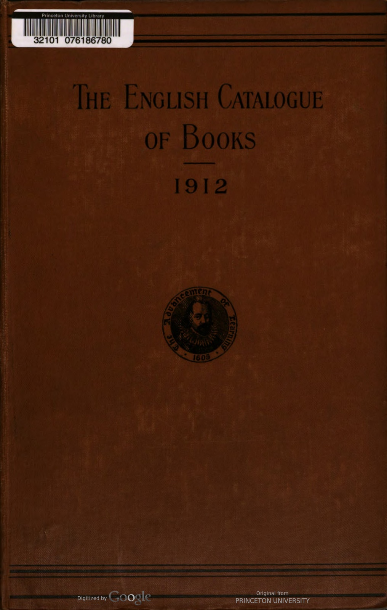
Data Table
1913
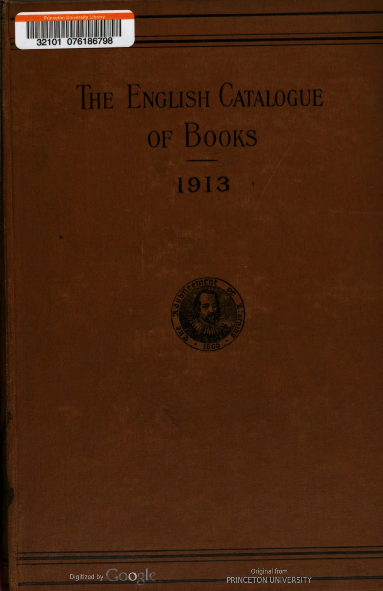
Data Table
| entry | last_name | first_name | title | publisher | price | format | original_entry | author_name | creators | is_editor | date | catalogue_year | is_net | |
|---|---|---|---|---|---|---|---|---|---|---|---|---|---|---|
| 0 | A B C fiscal handbook (The). 3rd edit. 8vo. 81 X5, pp. 262, 1s, net FREE TRADE UNION, Jan. 13 | NaN | NaN | A B C fiscal handbook (The) | FREE TRADE UNION | 1s. | 8vo. | A B C fiscal handbook (The). 3rd edit. 8vo. 81 X5, pp. 262, Is, net FREE TRADE UNION, Jan. 13 | NaN | NaN | NaN | Jan. 13 | 1913 | net |
| 1 | A B C guide to patents for inventors. 8vo. 2s. 6d. net. BUTTERWORTH, Apr. 13 | NaN | NaN | A B C guide to patents for inventors | BUTTERWORTH | 2s. 6d. | 8vo. | A B C guide to patents for inventors. 8vo. 25. 6d. net. BUTTERWORTH, Apr. 13 | NaN | NaN | NaN | Apr. 13 | 1913 | net |
| 2 | Abercrombie (Lascelles) –Speculative dialogues Cr. 8vo. 73 X5, pp. 204, 5s. net M. SOCKER, Oct. 13 | Abercrombie | Lascelles | Speculative dialogues | M. SOCKER | 5s. | 8vo. | Abercrombie (Lascelles) –Speculative dialogues Cr. 8vo. 73 X5, pp. 204, 5s. net M. SOCKER, Oct. 13 | Lascelles Abercrombie | ['Abercrombie (Lascelles)'] | NaN | Oct. 13 | 1913 | net |
| 3 | Abney (Sir William de W.)-Researches in colour vision and the trichromatic theory. 8vo. 9X58, pp. 432, 213, net….LONGMANS, Jan. 13 | Abney | Sir William de W. | Researches in colour vision and the trichromatic theory | LONGMANS | NaN | 8vo. | Abney (Sir William de W.)-Researches in colour vision and the trichromatic theory. 8vo. 9X58, pp. 432, 213, net….LONGMANS, Jan. 13 | Sir William de W. Abney | ['Abney (Sir William de W.)'] | NaN | Jan. 13 | 1913 | NaN |
| 4 | Aborigines of S. America, Church (G. E.) ios, 6d. net. About Edmond)-L'Homine à l'oreille Cassée. Cr. 8vo., 01s. 6d….. …RIVINGTON, May 13 | NaN | NaN | Aborigines of S. America, Church (G. E.) ios | RIVINGTON | 6d. | 8vo. | Aborigines of S. America, Church (G. E.) ios, 6d. net. About Edmond)-L'Homine à l'oreille Cassée. Cr. 8vo., IS. 6d….. …RIVINGTON, May 13 | NaN | NaN | NaN | May 13 | 1913 | NaN |
| 5 | About (Edmond)–Le Nez d'un notaire. 12mo., pp. 252, 1s, net. ……NELSON, Feb. 13 | About | Edmond | Le Nez d'un notaire | NELSON | 1s. | 12mo. | About (Edmond)–Le Nez d'un notaire. 12mo., pp. 252, Is, net. ……NELSON, Feb. 13 | Edmond About | ['About (Edmond)'] | NaN | Feb. 13 | 1913 | net |
| 6 | Abraham (Ashley P.)-Some portraits of the Lake poets and their honies. Illus. Ryl. 8vo. 94 X6, pp. 56, bds. 3s. 6d. net SIMPKIN, Aug. 13 | Abraham | Ashley P. | Some portraits of the Lake poets and their honies | SIMPKIN | 3s. 6d. | 8vo. | Abraham (Ashley P.)-Some portraits of the Lake poets and their honies. Illus. Ryl. 8vo. 94 X6, pp. 56, bds. 35. 6d. net SIMPKIN, Aug. 13 | Ashley P. Abraham | ['Abraham (Ashley P.)'] | NaN | Aug. 13 | 1913 | net |
| 7 | Abraham (George D.)-Motor ways in lakeland. 8vo. 9 X5), pp. 320, 7s. 6d. net METHUEN, Aug. 13 | Abraham | George D. | Motor ways in lakeland | METHUEN | 7s. 6d. | 8vo. | Abraham (George D.)-Motor ways in lakeland. 8vo. 9 X5), pp. 320, 7s. 6d. net METHUEN, Aug. 13 | George D. Abraham | ['Abraham (George D.)'] | NaN | Aug. 13 | 1913 | net |
| 8 | Abraham (J. Johnston)-The Surgeon's log : impressions of the Far Fast. Re-issue. Cr. 8vo. 74 X5, pp. 316, 2s. 6d. net CHAPMAN & H., June 13 | Abraham | J. Johnston | The Surgeon's log : impressions of the Far Fast | CHAPMAN & H. | 2s. 6d. | 8vo. | Abraham (J. Johnston)-The Surgeon's log : impressions of the Far Fast. Re-issue. Cr. 8vo. 74 X5, pp. 316, 25. 6d. net CHAPMAN & H., June 13 | J. Johnston Abraham | ['Abraham (J. Johnston)'] | NaN | June 13 | 1913 | net |
| 9 | Abraham (K.)—Steam economy in the sugar factory. Trans. from the German edit. by E. J. Bayle. Cr. 8vo., 6s. 6d. net CHAPMAN & H., Jan, 13 | Abraham | K. | Steam economy in the sugar factory | CHAPMAN & H. | 6s. 6d. | 8vo. | Abraham (K.)—Steam economy in the sugar factory. Trans. from the German edit. by E. J. Bayle. Cr. 8vo., 6s. 6d. net CHAPMAN & H., Jan, 13 | K. Abraham | ['Abraham (K.)'] | NaN | Jan, 13 | 1913 | net |
| 10 | Abramowski (O. L. M.)— Eating for health. 3rd edit. Cr. 8vo., 38. 6d. net W. SCOTT, Aug. 13 | Abramowski | O. L. M. | Eating for health | W. SCOTT | 6d. | 8vo. | Abramowski (O. L. M.)— Eating for health. 3rd edit. Cr. 8vo., 38. 6d. net W. SCOTT, Aug. 13 | O. L. M. Abramowski | ['Abramowski (O. L. M.)'] | NaN | Aug. 13 | 1913 | net |
| 11 | Academy Architecture and Architectural Review, 1913. Vol. 43. Edit. by Alex. Koch. 4to. 4s. rod. net, swd. 4s. net.. SIMPKIN, June 13 | NaN | NaN | Academy Architecture and Architectural Review | SIMPKIN | 4s. | 4to. | Academy Architecture and Architectural Review, 1913. Vol. 43. Edit. by Alex. Koch. 4to. 45. rod. net, swd. 45. net.. SIMPKIN, June 13 | NaN | NaN | NaN | June 13 | 1913 | net |
| 12 | Accountancy for retail traders, Wood (D.) 2s. 6d. net… Accountants' (Incorporated) Year book. 8vo. 71 x 41, pp. 782, 2s. …SOCIETY, Oct. 13 | NaN | NaN | Accountancy for retail traders, Wood (D.) | SOCIETY | 2s. | 8vo. | Accountancy for retail traders, Wood (D.) 25. 6d. net… Accountants' (Incorporated) Year book. 8vo. 71 x 41, pp. 782, 25. …SOCIETY, Oct. 13 | NaN | NaN | NaN | Oct. 13 | 1913 | NaN |
| 13 | Accountants (Institute of Chartered) in England and Wales.-List of members, 1913, Royal Charter, and bye-laws. 8vo. 71 X 5, pp. 780, 2s. GEE, Oct. 13 | Accountants | Institute of Chartered | England and Wales | GEE | 2s. | 8vo. | Accountants (Institute of Chartered) in England and Wales.-List of members, 1913, Royal Charter, and bye-laws. 8vo. 71 X 5, pp. 780, 25. GEE, Oct. 13 | Institute of Chartered Accountants | ['Accountants (Institute of Chartered)'] | NaN | Oct. 13 | 1913 | NaN |
| 14 | A. L.-School temperature register, No. 3. 8d, net .E. J. ARNOLD, Jan. 13 | NaN | NaN | A. L.-School temperature register | E. J. ARNOLD | 8d. | NaN | A. L.-School temperature register, No. 3. 8d, net .E. J. ARNOLD, Jan. 13 | NaN | NaN | NaN | Jan. 13 | 1913 | net |
1914
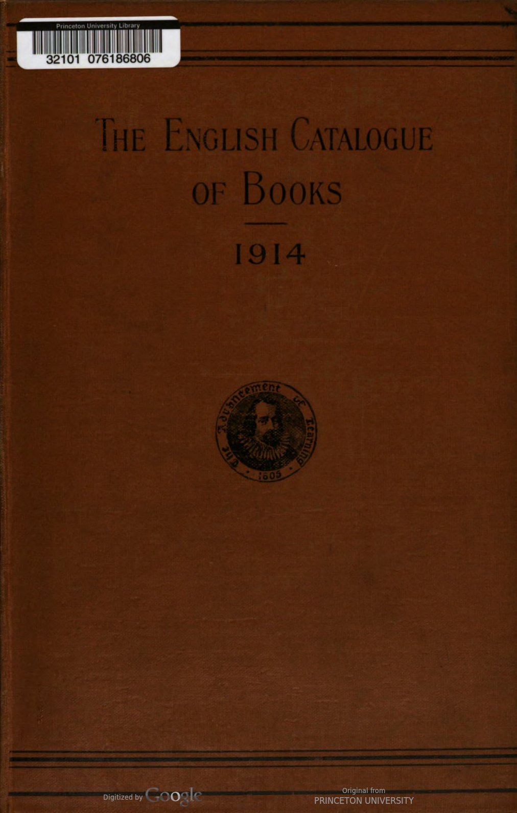
Data Table
| entry | last_name | first_name | title | publisher | price | format | original_entry | author_name | creators | is_editor | date | catalogue_year | is_net | |
|---|---|---|---|---|---|---|---|---|---|---|---|---|---|---|
| 0 | A. K. H. B. : selections, Boyd (A. K. H.) is. net A. L.” Welcome readers (The). Book Illa. 4to. 9d. net .E. J. ARNOLD, Aug. 14 | NaN | NaN | A. K. H. B. : selections, Boyd (A. K. H.) is | E. J. ARNOLD | 9d. | 4to. | A. K. H. B. : selections, Boyd (A. K. H.) is. net A. L.” Welcome readers (The). Book Illa. 4to. 9d. net .E. J. ARNOLD, Aug. 14 | NaN | NaN | NaN | Aug. 14 | 1914 | net |
| 1 | A.L. Welcome readers (The). Books 4A & 5A. 4to, ea. rod. net .E. J. ARNOLD, Sep. 14 | NaN | NaN | A.L. Welcome readers (The) | E. J. ARNOLD | NaN | 4to, | A.L. Welcome readers (The). Books 4A & 5A. 4to, ea. rod. net .E. J. ARNOLD, Sep. 14 | NaN | NaN | NaN | Sep. 14 | 1914 | NaN |
| 2 | Abbey (John)—The Word of God and the use of intoxicating liquor. 2nd edit., enlarged. Cr. 8vo. 8} x 51, pp. 160, 1s. net (37, Thorncliffe Rd., Oxford) AUTHOR, July 14 | Abbey | John | The Word of God and the use of intoxicating liquor | AUTHOR | 1s. | 8vo. | Abbey (John)—The Word of God and the use of intoxicating liquor. 2nd edit., enlarged. Cr. 8vo. 8} x 51, pp. 160, Is. net (37, Thorncliffe Rd., Oxford) AUTHOR, July 14 | John Abbey | ['Abbey (John)'] | NaN | July 14 | 1914 | net |
| 3 | Abbot (Allen)-The Theorist : a novel. Cr. 8vo. 73x44, pp. 320, 6s. ..A. MELROSE, May 14 | Abbot | Allen | The Theorist : a novel | A. MELROSE | 6s. | 8vo. | Abbot (Allen)-The Theorist : a novel. Cr. 8vo. 73x44, pp. 320, 6s. ..A. MELROSE, May 14 | Allen Abbot | ['Abbot (Allen)'] | NaN | May 14 | 1914 | NaN |
| 4 | Abbott (Edwin A.)—The Fourfold gospel. Section II., The Beginning. 8vo. 9X5}, pp. 480, 12s. éd. net CAMB. UNIV. PRESS, Feb. 14 | Abbott | Edwin A. | The Fourfold gospel | CAMB. UNIV. PRESS | NaN | 8vo. | Abbott (Edwin A.)—The Fourfold gospel. Section II., The Beginning. 8vo. 9X5}, pp. 480, 125. éd. net CAMB. UNIV. PRESS, Feb. 14 | Edwin A. Abbott | ['Abbott (Edwin A.)'] | NaN | Feb. 14 | 1914 | NaN |
| 5 | Abbott (Eleanor Hallowell) — The White linen Cr. 8vo. 73 X5, pp. 284, 6s. HODDER & S., Feb. 14 | Abbott | Eleanor Hallowell | The White linen | HODDER & S. | 6s. | 8vo. | Abbott (Eleanor Hallowell) — The White linen Cr. 8vo. 73 X5, pp. 284, 6s. HODDER & S., Feb. 14 | Eleanor Hallowell Abbott | ['Abbott (Eleanor Hallowell)'] | NaN | Feb. 14 | 1914 | NaN |
| 6 | Abbott (H. W.)–Vision : a book of lyrics. Cr. 8vo., 28. 6d. net … E. MATHEWS, May 14 | Abbott | H. W. | Vision : a book of lyrics | E. MATHEWS | 6d. | 8vo. | Abbott (H. W.)–Vision : a book of lyrics. Cr. 8vo., 28. 6d. net … E. MATHEWS, May 14 | H. W. Abbott | ['Abbott (H. W.)'] | NaN | May 14 | 1914 | net |
| 7 | Abbott (J. F.)—The Elementary pr'nciples of general biology. Cr. 8vo., 6s. 6d. net MACMILLAN, Mar. 14 | Abbott | J. F. | The Elementary pr'nciples of general biology | MACMILLAN | 6s. 6d. | 8vo. | Abbott (J. F.)—The Elementary pr'nciples of general biology. Cr. 8vo., 6s. 6d. net MACMILLAN, Mar. 14 | J. F. Abbott | ['Abbott (J. F.)'] | NaN | Mar. 14 | 1914 | net |
| 8 | Abbott (Willis J.)-Notable women in history. Illus. 8vo. 9} x 58, pp. 450, 16s. net GREENING, Mar. 14 | Abbott | Willis J. | Notable women in history | GREENING | 16s. | 8vo. | Abbott (Willis J.)-Notable women in history. Illus. 8vo. 9} x 58, pp. 450, 16s. net GREENING, Mar. 14 | Willis J. Abbott | ['Abbott (Willis J.)'] | NaN | Mar. 14 | 1914 | net |
| 9 | Abderhalden (Emil)–Defensive ferments of the animal organism. 3rd enlarged edit. Cr. 8vo 71 X 5, pp. 262, 7s. 6d. net .BALE, Apr. 14 | Abderhalden | Emil | Defensive ferments of the animal organism | BALE | 7s. 6d. | 8vo | Abderhalden (Emil)–Defensive ferments of the animal organism. 3rd enlarged edit. Cr. 8vo 71 X 5, pp. 262, 75. 6d. net .BALE, Apr. 14 | Emil Abderhalden | ['Abderhalden (Emil)'] | NaN | Apr. 14 | 1914 | net |
| 10 | Abdur Rahman-Eine kritische Profung der Quellen des 1slamitischen Rechts : sources of Muslim law. Ryl. 8vo. 101 x 71, pp. 236, 21s. net MILFORD, July 14 | NaN | NaN | Abdur Rahman-Eine kritische Profung der Quellen des | MILFORD | 21s. | 8vo. | Abdur Rahman-Eine kritische Profung der Quellen des Islamitischen Rechts : sources of Muslim law. Ryl. 8vo. 101 x 71, pp. 236, 21s. net MILFORD, July 14 | NaN | NaN | NaN | July 14 | 1914 | net |
| 11 | Abell (Francis)-Prisoners of war in Britain 1765 to 1815: a record of their lives, their romance and their sufferings. Illus. 8vo. 9: X5, pp. 472, 15s. net…. MILFORD, Nov. 14 | Abell | Francis | Prisoners of war in Britain | MILFORD | 15s. | 8vo. | Abell (Francis)-Prisoners of war in Britain 1765 to 1815: a record of their lives, their romance and their sufferings. Illus. 8vo. 9: X5, pp. 472, 155. net…. MILFORD, Nov. 14 | Francis Abell | ['Abell (Francis)'] | NaN | Nov. 14 | 1914 | net |
| 12 | Abercrombie (Lascelles)— The Epic. 12mo., pp. 96, is, net. (Art and craft of letters) M. SECKER, May 14 | Abercrombie | Lascelles | The Epic | M. SECKER | NaN | 12mo. | Abercrombie (Lascelles)— The Epic. 12mo., pp. 96, is, net. (Art and craft of letters) M. SECKER, May 14 | Lascelles Abercrombie | ['Abercrombie (Lascelles)'] | NaN | May 14 | 1914 | NaN |
| 13 | Abraham (Ashley P.)-Beautiful north Wales. Illus. 4to. 11X8}, pp. 52, bds, 3s. 6d. net AUTHOR, May 14 | Abraham | Ashley P. | Beautiful north Wales | AUTHOR | 3s. 6d. | 4to. | Abraham (Ashley P.)-Beautiful north Wales. Illus. 4to. I1X8}, pp. 52, bds, 3s. 6d. net AUTHOR, May 14 | Ashley P. Abraham | ['Abraham (Ashley P.)'] | NaN | May 14 | 1914 | net |
| 14 | Abraham (J. Johnston)—The Night nurse. New and cheaper edit. Cr. 8vo. 7} 4, pp. 322, 29. net CHAPMAN & H., Sep. 14 | Abraham | J. Johnston | The Night nurse | CHAPMAN & H. | NaN | 8vo. | Abraham (J. Johnston)—The Night nurse. New and cheaper edit. Cr. 8vo. 7} 4, pp. 322, 29. net CHAPMAN & H., Sep. 14 | J. Johnston Abraham | ['Abraham (J. Johnston)'] | NaN | Sep. 14 | 1914 | NaN |
1915
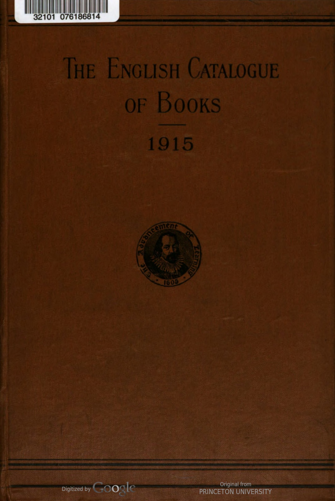
Data Table
| entry | last_name | first_name | title | publisher | price | format | original_entry | author_name | creators | is_editor | date | catalogue_year | is_net | |
|---|---|---|---|---|---|---|---|---|---|---|---|---|---|---|
| 0 | A B C of housekeeping, Herrick (c. T.) 2s. net A B C of income tax return making. By a Lay- man. 8vo., pp. 80, 28. 6d. net (Bradford : 7a, Guy's Cliff) AUTHOR, June 15 | NaN | NaN | A B C of housekeeping, Herrick (c | AUTHOR | 6d. | 8vo. | A B C of housekeeping, Herrick (c. T.) 25. net A B C of income tax return making. By a Lay- man. 8vo., pp. 80, 28. 6d. net (Bradford : 7a, Guy's Cliff) AUTHOR, June 15 | NaN | NaN | NaN | June 15 | 1915 | net |
| 1 | ABC of Jolly Jack. 4to. bds. 1s. net GALE & P., Oct. 15 | NaN | NaN | ABC of Jolly Jack | GALE & P. | 1s. | 4to. | ABC of Jolly Jack. 4to. bds. Is. net GALE & P., Oct. 15 | NaN | NaN | NaN | Oct. 15 | 1915 | net |
| 2 | ABC of our soldiers. 4to., bds. is. net GALE & P., Nov. 15 | NaN | NaN | ABC of our soldiers | GALE & P. | NaN | 4to. | ABC of our soldiers. 4to., bds. is. net GALE & P., Nov. 15 | NaN | NaN | NaN | Nov. 15 | 1915 | NaN |
| 3 | Abady (Jacques)-Clauses and precedents in electricity, gas and water legislation. 8vo., pp. 383, 15s. net ……….W. KING, Mar. 15 | Abady | Jacques | Clauses and precedents in electricity, gas and water legislation | W. KING | 15s. | 8vo. | Abady (Jacques)-Clauses and precedents in electricity, gas and water legislation. 8vo., pp. 383, 155. net ……….W. KING, Mar. 15 | Jacques Abady | ['Abady (Jacques)'] | NaN | Mar. 15 | 1915 | net |
| 4 | Abbott (Edwin A.)—The Fourfold Gospel. Sect. 3, The Proclamation of the New Kingdom. Demy 8vo., pp. 572, 12s. 6d. net CAMB. UNIV. PR., Mar. 15 | Abbott | Edwin A. | The Fourfold Gospel | CAMB. UNIV. PR. | 12s. 6d. | 8vo. | Abbott (Edwin A.)—The Fourfold Gospel. Sect. 3, The Proclamation of the New Kingdom. Demy 8vo., pp. 572, 125. 6d. net CAMB. UNIV. PR., Mar. 15 | Edwin A. Abbott | ['Abbott (Edwin A.)'] | NaN | Mar. 15 | 1915 | net |
| 5 | Abbott (Edwin A.)-Miscellanea Evangelica. II, Christ's miracles of feeding. 8vo. 33. net CAMB, UNIV. PR., Aug. 15 | Abbott | Edwin A. | Miscellanea Evangelica | CAMB, UNIV. PR. | NaN | 8vo. | Abbott (Edwin A.)-Miscellanea Evangelica. II, Christ's miracles of feeding. 8vo. 33. net CAMB, UNIV. PR., Aug. 15 | Edwin A. Abbott | ['Abbott (Edwin A.)'] | NaN | Aug. 15 | 1915 | NaN |
| 6 | Abbott (Lyman)–How shall we think of our dead ? 18mo., pp. 24, swd. 6d. net MELROSE, Oct. 15 | Abbott | Lyman | How shall we think of our dead ? | MELROSE | 6d. | 18mo. | Abbott (Lyman)–How shall we think of our dead ? 18mo., pp. 24, swd. 6d. net MELROSE, Oct. 15 | Lyman Abbott | ['Abbott (Lyman)'] | NaN | Oct. 15 | 1915 | net |
| 7 | Abbott (Maude) ed.-Descriptive catalogue of the Medical Museum of McGill University arranged on a modified Decimal system of museum classification. Pt. 4, sec. 1, The Hæmopoietic organs. Catalogue and didactic intro., by 0. C. Gruner. Ryl. 8vo. 98 x 6], pp. 204, ios. 6d. net (Clarendon Pr.) MILFORD, July 15 | Abbott | Maude | Descriptive catalogue of the Medical Museum of McGill University arranged on a modified Decimal system of museum classification | MILFORD | 6d. | 8vo. | Abbott (Maude) ed.-Descriptive catalogue of the Medical Museum of McGill University arranged on a modified Decimal system of museum classification. Pt. 4, sec. 1, The Hæmopoietic organs. Catalogue and didactic intro., by 0. C. Gruner. Ryl. 8vo. 98 x 6], pp. 204, ios. 6d. net (Clarendon Pr.) MILFORD, July 15 | Maude Abbott | ['Abbott (Maude)'] | ed. | July 15 | 1915 | net |
| 8 | Abbott (P.)-Exercises in arithmetic and men- suration. Cr. 8vo., 38. 6d. w. answ. 4s. 60. LONGMANS, Jan. 15 | Abbott | P. | Exercises in arithmetic and men- suration | LONGMANS | NaN | 8vo. | Abbott (P.)-Exercises in arithmetic and men- suration. Cr. 8vo., 38. 6d. w. answ. 45. 60. LONGMANS, Jan. 15 | P. Abbott | ['Abbott (P.)'] | NaN | Jan. 15 | 1915 | NaN |
| 9 | Abbott (P.)- Exercises in arithmetic and mensu- ration. Re-issue. Sect. I and 2. Cr. 8vo. ea. 2s. LONGMANS, Apr. 15 | Abbott | P. | Exercises in arithmetic and mensu- ration | LONGMANS | 2s. | 8vo. | Abbott (P.)- Exercises in arithmetic and mensu- ration. Re-issue. Sect. I and 2. Cr. 8vo. ea. 2s. LONGMANS, Apr. 15 | P. Abbott | ['Abbott (P.)'] | NaN | Apr. 15 | 1915 | NaN |
| 10 | Abbott (w.)-Commercial theory and practice. Cr. 8vo. 7*5, pp. 360, 3s. 6d. MURRAY, Oct. 15 | Abbott | w. | Commercial theory and practice | MURRAY | 3s. 6d. | 8vo. | Abbott (w.)-Commercial theory and practice. Cr. 8vo. 7*5, pp. 360, 3s. 6d. MURRAY, Oct. 15 |
|
['Abbott (w.)'] | NaN | Oct. 15 | 1915 | NaN |
| 11 | Abdul Baha.-Talks by A. B., given in Paris, 2nd edit., with additions. Cr. 8vo. 71 x 5, pp. 174, 28. 6d. net ….BELL, Apr. 15 | NaN | NaN | Abdul Baha | BELL | 6d. | 8vo. | Abdul Baha.-Talks by A. B., given in Paris, 2nd edit., with additions. Cr. 8vo. 71 x 5, pp. 174, 28. 6d. net ….BELL, Apr. 15 | NaN | NaN | NaN | Apr. 15 | 1915 | net |
| 12 | Abel (George) -Wylins fae my wallet. Foreword by Prof. Stalker. With glossary. 8vo. 84 x 61, pp. 150, 28. 6d. net …..GARDNER, Dec. 15 | Abel | George | Wylins fae my wallet | GARDNER | 6d. | 8vo. | Abel (George) -Wylins fae my wallet. Foreword by Prof. Stalker. With glossary. 8vo. 84 x 61, pp. 150, 28. 6d. net …..GARDNER, Dec. 15 | George Abel | ['Abel (George)'] | NaN | Dec. 15 | 1915 | net |
| 13 | Aberdeen (Univ. of)-Annual report on the state of finances. 5d. … WYMAN, June 15 | Aberdeen | Univ. of | Annual report on the state of finances | WYMAN | 5d. | NaN | Aberdeen (Univ. of)-Annual report on the state of finances. 5d. … WYMAN, June 15 | Univ. of Aberdeen | ['Aberdeen (Univ. of)'] | NaN | June 15 | 1915 | NaN |
| 14 | Aberdeen University-Annual statistical report, 1913-14. Ifd. . WYMAN, Mar. 15 | NaN | NaN | Aberdeen University-Annual statistical report | WYMAN | NaN | NaN | Aberdeen University-Annual statistical report, 1913-14. Ifd. . WYMAN, Mar. 15 | NaN | NaN | NaN | Mar. 15 | 1915 | NaN |
:::
:::
1916
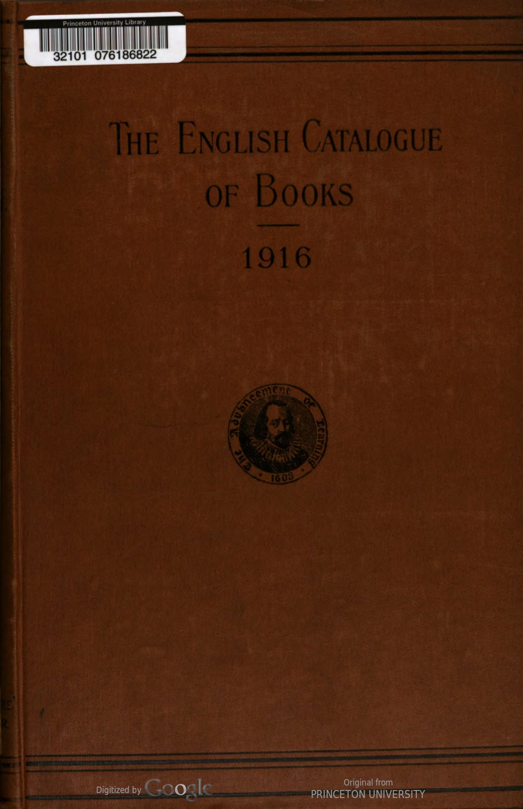
Data Table
| entry | last_name | first_name | title | publisher | price | format | original_entry | author_name | creators | is_editor | date | catalogue_year | is_net | |
|---|---|---|---|---|---|---|---|---|---|---|---|---|---|---|
| 0 | . А A B C. Obl. 4to. 114x84, linen 38. 6d. net, ed. de luxe 5s. net; swd. is. net. ( Geographia' Brit. picture bks.) ..GEOGRAPHIA, Dec. 16 | NaN | NaN | A B C. Obl | GEOGRAPHIA | NaN | 4to. | . А A B C. Obl. 4to. 114x84, linen 38. 6d. net, ed. de luxe 5s. net; swd. is. net. ( Geographia' Brit. picture bks.) ..GEOGRAPHIA, Dec. 16 | NaN | NaN | NaN | Dec. 16 | 1916 | NaN |
| 1 | A B C guide for attested and unattested. 32mo. 4*X3, swd. id………….LARBY, June 16 | NaN | NaN | A B C guide for attested and unattested | LARBY | NaN | 32mo. | A B C guide for attested and unattested. 32mo. 4*X3, swd. id………….LARBY, June 16 | NaN | NaN | NaN | June 16 | 1916 | NaN |
| 2 | A B C guide to London, 1916. Cr. 8vo. 64 x 48, swd. 4d. .LARBY, Aug. 16 | NaN | NaN | A B C guide to London | LARBY | 4d. | 8vo. | A B C guide to London, 1916. Cr. 8vo. 64 x 48, swd. 4d. .LARBY, Aug. 16 | NaN | NaN | NaN | Aug. 16 | 1916 | NaN |
| 3 | A B C of banking (The). By “L. S. D.” Cr. 8vo. 74 X 5, pp. 150, 28. 6d. net BARNICOTT & P., Jan. 16 | NaN | NaN | A B C of banking (The) | BARNICOTT & P. | 6d. | 8vo. | A B C of banking (The). By “L. S. D.” Cr. 8vo. 74 X 5, pp. 150, 28. 6d. net BARNICOTT & P., Jan. 16 | NaN | NaN | NaN | Jan. 16 | 1916 | net |
| 4 | A. L. Bright story readers. Grade 3. Cr. 8vo. 71 x 57, pp. 63, swd. 3d. E. J. ARNOLD, July 16 | NaN | NaN | A. L. Bright story readers | E. J. ARNOLD | 3d. | 8vo. | A. L. Bright story readers. Grade 3. Cr. 8vo. 71 x 57, pp. 63, swd. 3d. E. J. ARNOLD, July 16 | NaN | NaN | NaN | July 16 | 1916 | NaN |
| 5 | A. L. Bright story readers. No. 116, The Nightingale and the bottle neck. Cr. 8vo. 77 x 51, pp. 32, swd, 2d. E. J. ARNOLD, Aug. 16 | NaN | NaN | A. L. Bright story readers | E. J. ARNOLD | 2d. | 8vo. | A. L. Bright story readers. No. 116, The Nightingale and the bottle neck. Cr. 8vo. 77 x 51, pp. 32, swd, 2d. E. J. ARNOLD, Aug. 16 | NaN | NaN | NaN | Aug. 16 | 1916 | NaN |
| 6 | Abbot (Charles Greeley)-Arequipa pyrhelio- metry. 8vo. 98 x64, pp. 24, is. net. (Smith- sonian Coll.) .WESLEY, Oct. 16 | Abbot | Charles Greeley | Arequipa pyrhelio- metry | WESLEY | NaN | 8vo. | Abbot (Charles Greeley)-Arequipa pyrhelio- metry. 8vo. 98 x64, pp. 24, is. net. (Smith- sonian Coll.) .WESLEY, Oct. 16 | Charles Greeley Abbot | ['Abbot (Charles Greeley)'] | NaN | Oct. 16 | 1916 | NaN |
| 7 | Abbot (Charles Greeley) and others On the distribution of radiation over the sun's disk and new evidences of the solar variability. ipl. 8vo. 93 X64, pp. 24, swd. is. 6d. net. (Smith- sonian Coll.) .. WESLEY, Oct. 16 | Abbot | Charles Greeley | On the distribution of radiation over the sun's disk and new evidences of the solar variability | WESLEY | NaN | 8vo. | Abbot (Charles Greeley) and others On the distribution of radiation over the sun's disk and new evidences of the solar variability. ipl. 8vo. 93 X64, pp. 24, swd. is. 6d. net. (Smith- sonian Coll.) .. WESLEY, Oct. 16 | Charles Greeley Abbot | ['Abbot (Charles Greeley)'] | NaN | Oct. 16 | 1916 | NaN |
| 8 | Abbott (Edwin A.)-Diatessarica : Part 10, The Fourfold gospel ; Section 4. The Law of the new kingdom. 8vo. 9 5, 12s. 6d. net CAMB. UNIV. PR., Mar. 16 | Abbott | Edwin A. | Diatessarica : Part | CAMB. UNIV. PR. | 12s. 6d. | 8vo. | Abbott (Edwin A.)-Diatessarica : Part 10, The Fourfold gospel ; Section 4. The Law of the new kingdom. 8vo. 9 5, 125. 6d. net CAMB. UNIV. PR., Mar. 16 | Edwin A. Abbott | ['Abbott (Edwin A.)'] | NaN | Mar. 16 | 1916 | net |
| 9 | Abbott (James Francis)- Japanese expansion and American policies. Cr. 8vo. 78 x 58, 6s. 6d. net (N. Y.) MACMILLAN, Feb. 16 | Abbott | James Francis | Japanese expansion and American policies | MACMILLAN | 6s. 6d. | 8vo. | Abbott (James Francis)- Japanese expansion and American policies. Cr. 8vo. 78 x 58, 6s. 6d. net (N. Y.) MACMILLAN, Feb. 16 | James Francis Abbott | ['Abbott (James Francis)'] | NaN | Feb. 16 | 1916 | net |
| 10 | Abbott (Lyman)–Reminiscences. Illus. 8vo. 9x6, pp. 528, 15s. net.. CONSTABLE, Feb. 16 | Abbott | Lyman | Reminiscences | CONSTABLE | 15s. | 8vo. | Abbott (Lyman)–Reminiscences. Illus. 8vo. 9x6, pp. 528, 155. net.. CONSTABLE, Feb. 16 | Lyman Abbott | ['Abbott (Lyman)'] | NaN | Feb. 16 | 1916 | net |
| 11 | Abbott-Brown (C., Maj.)—How to do it: the A.S.C. subaltern's and N.C.O.'s vade mecum ; also applic. for cavalry, artillery, engineers ard infantry. 44 X 31, pp. 97, is. net F. GROOM, Aug. 16 | Abbott-Brown | C., Maj. | How to do it: the A.S.C. subaltern's and N.C.O.'s vade mecum ; also applic | F. GROOM | NaN | NaN | Abbott-Brown (C., Maj.)—How to do it: the A.S.C. subaltern's and N.C.O.'s vade mecum ; also applic. for cavalry, artillery, engineers ard infantry. 44 X 31, pp. 97, is. net F. GROOM, Aug. 16 | C., Maj. Abbott-Brown | ['Abbott-Brown (C., Maj.)'] | NaN | Aug. 16 | 1916 | NaN |
| 12 | Abdullah (Achmed)-The Red stain: a story of mystery and crime. Cr. 8vo. 74 X 5, pp. 309, 6s. SIMPKIN, Sep. 16 | Abdullah | Achmed | The Red stain: a story of mystery and crime | SIMPKIN | 6s. | 8vo. | Abdullah (Achmed)-The Red stain: a story of mystery and crime. Cr. 8vo. 74 X 5, pp. 309, 6s. SIMPKIN, Sep. 16 | Achmed Abdullah | ['Abdullah (Achmed)'] | NaN | Sep. 16 | 1916 | NaN |
| 13 | Accounts (Public), Ctte. of, 1916—Memo. by Comptroller and Auditor-Gen. for inform. of, rid. … WYMAN, Sept. 16 | Accounts | Public | Ctte | WYMAN | NaN | NaN | Accounts (Public), Ctte. of, 1916—Memo. by Comptroller and Auditor-Gen. for inform. of, rid. … WYMAN, Sept. 16 | Public Accounts | ['Accounts (Public)'] | NaN | Sept. 16 | 1916 | NaN |
| 14 | Acland (Mrs. Arthur H. D.)-Child training. Cr. 8vo. 71 x 5, pp. 179, 1s. net SIDGWICK & J., Oct. 16 | Acland | Mrs. Arthur H. D. | Child training | SIDGWICK & J. | 1s. | 8vo. | Acland (Mrs. Arthur H. D.)-Child training. Cr. 8vo. 71 x 5, pp. 179, Is. net SIDGWICK & J., Oct. 16 | Mrs. Arthur H. D. Acland | ['Acland (Mrs. Arthur H. D.)'] | NaN | Oct. 16 | 1916 | net |
1917
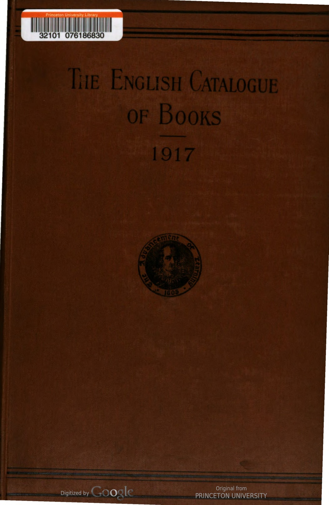
Data Table
| entry | last_name | first_name | title | publisher | price | format | original_entry | author_name | creators | is_editor | date | catalogue_year | is_net | |
|---|---|---|---|---|---|---|---|---|---|---|---|---|---|---|
| 0 | A B Ceasel painting box (The). 1s. net FROWDE AND H. & S., Nov. '17 | NaN | NaN | A B Ceasel painting box (The) | FROWDE AND H. & S. | 1s. | NaN | A B Ceasel painting box (The). Is. net FROWDE AND H. & S., Nov. '17 | NaN | NaN | NaN | Nov. '17 | 1917 | net |
| 1 | A B C guide to health resorts served by the Great Central Railway, 1917. 8vo. 84 x 58, pp. 441, 01s. W. HILL, Aug. '17 | NaN | NaN | A B C guide to health resorts served by the Great Central Railway | W. HILL | NaN | 8vo. | A B C guide to health resorts served by the Great Central Railway, 1917. 8vo. 84 x 58, pp. 441, IS. W. HILL, Aug. '17 | NaN | NaN | NaN | Aug. '17 | 1917 | NaN |
| 2 | A.L. Table book (The): weights and meas- ures and metric system. 18mo. 54 x 44, pp. .E. J. ARNOLD, Aug. '17 | NaN | NaN | A.L. Table book (The): weights and meas- ures and metric system | E. J. ARNOLD | NaN | 18mo. | A.L. Table book (The): weights and meas- ures and metric system. 18mo. 54 x 44, pp. .E. J. ARNOLD, Aug. '17 | NaN | NaN | NaN | Aug. '17 | 1917 | NaN |
| 3 | A.L. Welcome readers. Preparatory book A. Cr. 8vo. 71% 5, pp. 76, 6d. net E. J. ARNOLD, Sep. '17 | NaN | NaN | A.L. Welcome readers | E. J. ARNOLD | 6d. | 8vo. | A.L. Welcome readers. Preparatory book A. Cr. 8vo. 71% 5, pp. 76, 6d. net E. J. ARNOLD, Sep. '17 | NaN | NaN | NaN | Sep. '17 | 1917 | net |
| 4 | A.S.O.T.P. See P. (A.S.O.T.) Aaronsohn (Alexander)-With the Turks in Palestine. Cr. 8vo. 71 x 5, pp. 125, 2s. net CONSTABLE, Apr. 17 | NaN | NaN | A.S.O.T.P. See P. (A.S.O.T.) Aaronsohn (Alexander)-With the Turks in Palestine | CONSTABLE | 2s. | 8vo. | A.S.O.T.P. See P. (A.S.O.T.) Aaronsohn (Alexander)-With the Turks in Palestine. Cr. 8vo. 71 x 5, pp. 125, 25. net CONSTABLE, Apr. 17 | NaN | NaN | NaN | Apr. 17 | 1917 | net |
| 5 | Abbott (E.) and Breckinridge (S. P.)-Truancy and non-attendance in the Chicago schools : a study of the social aspects of the compulsory education and child labor legislation of Illinois. Cr. 8vo. 8 X 5), pp. 488, 9s. net CAMB. UNIV. PR., Apr. 17 | Abbott | E. | Truancy and non-attendance in the Chicago schools : a study of the social aspects of the compulsory education and child labor legislation of Illinois | CAMB. UNIV. PR. | 9s. | 8vo. | Abbott (E.) and Breckinridge (S. P.)-Truancy and non-attendance in the Chicago schools : a study of the social aspects of the compulsory education and child labor legislation of Illinois. Cr. 8vo. 8 X 5), pp. 488, 9s. net CAMB. UNIV. PR., Apr. 17 | E. Abbott | ['Abbott (E.)', 'Breckinridge (S. P.)'] | NaN | Apr. 17 | 1917 | net |
| 6 | Abbott (Edwin A.)-The Fourfold Gospel. Sect. V, The Founding of the New Kingdom; or, Life reached through death. (Diatessarica. Pt. X, sect. V. The completion of the work.] Demy 8vo. 74x59, pp. 832, 16s. 6d. net CAMB. UNIV. PR., Sep. '17 | Abbott | Edwin A. | The Fourfold Gospel | CAMB. UNIV. PR. | 16s. 6d. | 8vo. | Abbott (Edwin A.)-The Fourfold Gospel. Sect. V, The Founding of the New Kingdom; or, Life reached through death. (Diatessarica. Pt. X, sect. V. The completion of the work.] Demy 8vo. 74x59, pp. 832, 16s. 6d. net CAMB. UNIV. PR., Sep. '17 | Edwin A. Abbott | ['Abbott (Edwin A.)'] | NaN | Sep. '17 | 1917 | net |
| 7 | Abbott (Eleanor Hallowell)–Little Eve Edgarton. Cr. 8vo. 73 x 44, pp. 248, is. net HODDER & S., Jan. 17 | Abbott | Eleanor Hallowell | Little Eve Edgarton | HODDER & S. | NaN | 8vo. | Abbott (Eleanor Hallowell)–Little Eve Edgarton. Cr. 8vo. 73 x 44, pp. 248, is. net HODDER & S., Jan. 17 | Eleanor Hallowell Abbott | ['Abbott (Eleanor Hallowell)'] | NaN | Jan. 17 | 1917 | NaN |
| 8 | Abraham (J. Johnston)-The Night nurse. New and cheaper ed. Cr. 8vo. 7X41, pp. 311, 18. net CHAPMAN & H., Jan, 17 | Abraham | J. Johnston | The Night nurse | CHAPMAN & H. | NaN | 8vo. | Abraham (J. Johnston)-The Night nurse. New and cheaper ed. Cr. 8vo. 7X41, pp. 311, 18. net CHAPMAN & H., Jan, 17 | J. Johnston Abraham | ['Abraham (J. Johnston)'] | NaN | Jan, 17 | 1917 | NaN |
| 9 | Abrahams (I.)-Studies in Pharisaism and the Gospels. Demy 8vo. 81 x 51, pp. 188, 6s. 6d. net… CAMB. UNIV. PR., May 17 | Abrahams | I. | Studies in Pharisaism and the Gospels | CAMB. UNIV. PR. | 6s. 6d. | 8vo. | Abrahams (I.)-Studies in Pharisaism and the Gospels. Demy 8vo. 81 x 51, pp. 188, 6s. 6d. net… CAMB. UNIV. PR., May 17 | I. Abrahams | ['Abrahams (I.)'] | NaN | May 17 | 1917 | net |
| 10 | Accounts (Public) Ctte. of-Index and Digest of evidence, Session 1916. 4d. .. WYMAN, Jan. 17 | Accounts | Public | Ctte | WYMAN | 4d. | NaN | Accounts (Public) Ctte. of-Index and Digest of evidence, Session 1916. 4d. .. WYMAN, Jan. 17 | Public Accounts | ['Accounts (Public)'] | NaN | Jan. 17 | 1917 | NaN |
| 11 | Accounts (Public) Ctte.-Report, 2d. ; do., w. proc., minutes of evid. and appen., 2s. H.M. STATIONERY OFF., Aug.'17 | Accounts | Public | Ctte | H.M. STATIONERY OFF. | 2s. | NaN | Accounts (Public) Ctte.-Report, 2d. ; do., w. proc., minutes of evid. and appen., 25. H.M. STATIONERY OFF., Aug.'17 | Public Accounts | ['Accounts (Public)'] | NaN | Aug.'17 | 1917 | NaN |
| 12 | “Achad ha-Am” see Ginzberg (A.) Achărya (Sri Ananda)-Brahmadarsanam; or, Intuition of the absolute : being an intro. to the study of Hindu philosophy. Cr. 8vo. 74 x 5, pp. 222, 4s. 6d. net ……MACMILLAN, Sep. '17 | NaN | NaN | Achad ha-Am” see Ginzberg (A.) Achărya (Sri Ananda)-Brahmadarsanam; or, Intuition of the absolute : being an intro | MACMILLAN | 4s. 6d. | 8vo. | “Achad ha-Am” see Ginzberg (A.) Achărya (Sri Ananda)-Brahmadarsanam; or, Intuition of the absolute : being an intro. to the study of Hindu philosophy. Cr. 8vo. 74 x 5, pp. 222, 45. 6d. net ……MACMILLAN, Sep. '17 | NaN | NaN | NaN | Sep. '17 | 1917 | net |
| 13 | Achilles Tatius. With an Eng. tr. by S. Gaselee. 18mo. 61 X41. pp. 461, 5s, net, Ithr. 6s. 6d. net (Locb classical“lib.) ..HEINEMANN, May 17 | NaN | NaN | Achilles Tatius | HEINEMANN | 6s. 6d. | 18mo. | Achilles Tatius. With an Eng. tr. by S. Gaselee. 18mo. 61 X41. pp. 461, 5s, net, Ithr. 6s. 6d. net (Locb classical“lib.) ..HEINEMANN, May 17 | NaN | NaN | NaN | May 17 | 1917 | net |
| 14 | Ackerley (Fred G.)-A Rumanian manual for self-tuition. Cr. 8vo. 71 x 5, pp. 145, 2s. net K. PAUL, Mar. 17 | Ackerley | Fred G. | A Rumanian manual for self-tuition | K. PAUL | 2s. | 8vo. | Ackerley (Fred G.)-A Rumanian manual for self-tuition. Cr. 8vo. 71 x 5, pp. 145, 25. net K. PAUL, Mar. 17 | Fred G. Ackerley | ['Ackerley (Fred G.)'] | NaN | Mar. 17 | 1917 | net |
1918
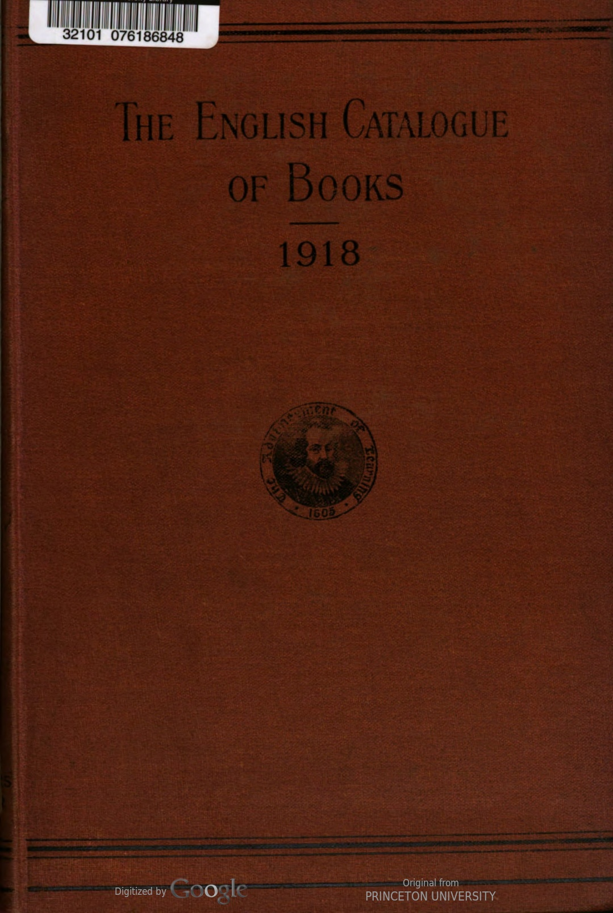
Data Table
| entry | last_name | first_name | title | publisher | price | format | original_entry | author_name | creators | is_editor | date | catalogue_year | is_net | |
|---|---|---|---|---|---|---|---|---|---|---|---|---|---|---|
| 0 | A. H. See H. (A.) A. P. See P. (A.) Abadie (J.)- Uounds of the abdomen. Pref. hs J.L. Faure. Ed., w. pref., by Sir W'. Arbutlinot Lane. Cr. *vo. 7} X 5, pp. 289, 7s. 6d. net (Military melical manvals) UNIV. CF LONDON PR., A pr.'18 | NaN | NaN | A. H. See H. (A.) A. P. See P. (A.) Abadie (J.)- Uounds of the abdomen | UNIV. CF LONDON PR. | 7s. 6d. | NaN | A. H. See H. (A.) A. P. See P. (A.) Abadie (J.)- Uounds of the abdomen. Pref. hs J.L. Faure. Ed., w. pref., by Sir W'. Arbutlinot Lane. Cr. *vo. 7} X 5, pp. 289, 7s. 6d. net (Military melical manvals) UNIV. CF LONDON PR., A pr.'18 | NaN | NaN | NaN | A pr.'18 | 1918 | net |
| 1 | (Orpington : “ The Maples,” Goddington Lane) J. ABBEY, Jan. '18 | NaN | NaN | NaN | J. ABBEY | NaN | NaN | (Orpington : “ The Maples,” Goddington Lane) J. ABBEY, Jan. '18 | NaN | NaN | NaN | Jan. '18 | 1918 | NaN |
| 2 | Abbeys and castles of Yorkshire, Waddington (F.) 28. …Oct. 'is Abbot (Willis J.)-Aircraft and submarines : the story of the invention, development and present-day uses of war's newest weapons. Illus. 92x61, pp. 402, 15s. net PUTNAM, June '18 | NaN | NaN | Abbeys and castles of Yorkshire, Waddington (F.) | PUTNAM | 15s. | NaN | Abbeys and castles of Yorkshire, Waddington (F.) 28. …Oct. 'is Abbot (Willis J.)-Aircraft and submarines : the story of the invention, development and present-day uses of war's newest weapons. Illus. 92x61, pp. 402, 155. net PUTNAM, June '18 | NaN | NaN | NaN | June '18 | 1918 | net |
| 3 | Abbott (E. A., Rev.) Righteousness in the Gospels. Roy. 8vo. 91x67, pp 14, swd. is net ….(Brit. Academy) MILFORD, May '18 | Abbott | E. A., Rev. | Righteousness in the Gospels | MILFORD | NaN | 8vo. | Abbott (E. A., Rev.) Righteousness in the Gospels. Roy. 8vo. 91x67, pp 14, swd. is net ….(Brit. Academy) MILFORD, May '18 | E. A., Rev. Abbott | ['Abbott (E. A., Rev.)'] | NaN | May '18 | 1918 | NaN |
| 4 | Abbott (E. C.)-The Science of health and home- making. Cr. 8vo. pp. 302, 3s. 6d. net G. BELL, July '18 | Abbott | E. C. | The Science of health and home- making | G. BELL | 3s. 6d. | 8vo. | Abbott (E. C.)-The Science of health and home- making. Cr. 8vo. pp. 302, 35. 6d. net G. BELL, July '18 | E. C. Abbott | ['Abbott (E. C.)'] | NaN | July '18 | 1918 | net |
| 5 | Abbott (P.)-Mathematical tables and formule. Cr. 8vo. 71 x 41, pp. 62, 2s. net. (Mod. mathe- matical ser.) ..LONGMANS, Nov. '18 | Abbott | P. | Mathematical tables and formule | LONGMANS | NaN | 8vo. | Abbott (P.)-Mathematical tables and formule. Cr. 8vo. 71 x 41, pp. 62, 2s. net. (Mod. mathe- matical ser.) ..LONGMANS, Nov. '18 | P. Abbott | ['Abbott (P.)'] | NaN | Nov. '18 | 1918 | NaN |
| 6 | Abbott(P.)-Elementary numerical trigonome'ry. Cr. 8vo. 7** 4\(, pp. 206, swd. 5s. net. (Mod. mathematical ser.). ...LONGMANS, Nov. \'18</td>\n <td>NaN</td>\n <td>NaN</td>\n <td>Abbott(P.)-Elementary numerical trigonome\'ry</td>\n <td>LONGMANS</td>\n <td>NaN</td>\n <td>8vo.</td>\n <td>Abbott(P.)-Elementary numerical trigonome\'ry. Cr. 8vo. 7** 4\), pp. 206, swd. 5s. net. (Mod. mathematical ser.). …LONGMANS, Nov. '18 | NaN | NaN | NaN | Nov. '18 | 1918 | NaN | |||||||
| 7 | Academy. See Royul Academy. Academy Architecture and Architectural Review, 1917–1918. Ed. by Hugh W. Martin-Kaye. Ryl. 8vo. 98 x 71, pp. 115, wd 5s. net ACADEMY ARCHITECTURE” OFFICES, Alg. '18 | NaN | NaN | Academy | OFFICES | NaN | 8vo. | Academy. See Royul Academy. Academy Architecture and Architectural Review, 1917–1918. Ed. by Hugh W. Martin-Kaye. Ryl. 8vo. 98 x 71, pp. 115, wd 55. net ACADEMY ARCHITECTURE” OFFICES, Alg. '18 | NaN | NaN | NaN | Alg. '18 | 1918 | NaN |
| 8 | Accounts (Public) atte. —Report, 2d. H.M. STATIONERY OFF., Aug. '18 | Accounts | Public | Report | H.M. STATIONERY OFF. | 2d. | NaN | Accounts (Public) atte. —Report, 2d. H.M. STATIONERY OFF., Aug. '18 | Public Accounts | ['Accounts (Public)'] | NaN | Aug. '18 | 1918 | NaN |
| 9 | Achard (L. A. E.)-Belle-Rose. 8vo. pp. 564, 01s, 6d. net . NELSON, Jan. '18 | Achard | L. A. E. | Belle-Rose | NELSON | 6d. | 8vo. | Achard (L. A. E.)-Belle-Rose. 8vo. pp. 564, IS, 6d. net . NELSON, Jan. '18 | L. A. E. Achard | ['Achard (L. A. E.)'] | NaN | Jan. '18 | 1918 | net |
| 10 | Acland (Mrs. Arthur H. D.)Queer beasts and magics : an experienced grandmother's tale for grandsons. Illus. by M. A. Acland and A. S. A. Cr. 8vo. 71 x 5, pp. 156, 3s. 6d net …SiDGWICK & J., Dec. '18 | Acland | Mrs. Arthur H. D. | Queer beasts and magics : an experienced grandmother's tale for grandsons | DGWICK & J. | NaN | 8vo. | Acland (Mrs. Arthur H. D.)Queer beasts and magics : an experienced grandmother's tale for grandsons. Illus. by M. A. Acland and A. S. A. Cr. 8vo. 71 x 5, pp. 156, 35. 6d net …SiDGWICK & J., Dec. '18 | Mrs. Arthur H. D. Acland | ['Acland (Mrs. Arthur H. D.)'] | NaN | Dec. '18 | 1918 | NaN |
| 11 | Active service French book for soldier: and sailors : containing The Soldiers' language manual, by Ajax”; “French for the Front, by E. F. Harris. 64x31, pp. 58, gd. net. MARLBOROUGH, Jan. '18 | NaN | NaN | Active service French book for soldier: and sailors : containing The Soldiers' language manual, by Ajax”; “French for the Front, by E. F. Harris | MARLBOROUGH | NaN | NaN | Active service French book for soldier: and sailors : containing The Soldiers' language manual, by Ajax”; “French for the Front, by E. F. Harris. 64x31, pp. 58, gd. net. MARLBOROUGH, Jan. '18 | NaN | NaN | NaN | Jan. '18 | 1918 | NaN |
| 12 | Acts—Index to the Public General Acts, 1917–18 ; w. tab. showing effect of year's legislation on Public General Acts ; also titles of 4 .cal and Private Acts arranged consecutively, alpha- betically, and in classes. 60. H.M. STATIONERY CFS., May '18 | NaN | NaN | Acts—Index to the Public General Acts | H.M. STATIONERY CFS. | NaN | NaN | Acts—Index to the Public General Acts, 1917–18 ; w. tab. showing effect of year's legislation on Public General Acts ; also titles of 4 .cal and Private Acts arranged consecutively, alpha- betically, and in classes. 60. H.M. STATIONERY CFS., May '18 | NaN | NaN | NaN | May '18 | 1918 | NaN |
| 13 | id ; Acts–Public General Acts, 1917-18, w. index, tables, titles of the local and Private Acts, &c. 3s. .H.M. STATIONERY OFF., July '18 | NaN | NaN | Acts–Public General Acts | H.M. STATIONERY OFF. | 3s. | NaN | id ; Acts–Public General Acts, 1917-18, w. index, tables, titles of the local and Private Acts, &c. 3s. .H.M. STATIONERY OFF., July '18 | NaN | NaN | NaN | July '18 | 1918 | NaN |
| 14 | Acts—Appropriation, 4d.; Chequers E. tate, 2d.; Education (Provi ion of meals) (Ireland), id.; Naval and military war pensions, &c. (Com- mittees), id. ; Air Force (Di cipline and regula- tion), 9d ; Naval Di cipline Act, 1866 (Printed, as amended, in accord. W. Air Force (Constitu- tion) Act, 1917), 6d. Local and private : Barrow-in-Furness Corporation Water, 9d.; Port of London, 3s. 3d. H.M. STATIONERY OFF., Jan. '18 | NaN | NaN | Acts—Appropriation | H.M. STATIONERY OFF. | 3s. 3d. | NaN | Acts—Appropriation, 4d.; Chequers E. tate, 2d.; Education (Provi ion of meals) (Ireland), id.; Naval and military war pensions, &c. (Com- mittees), id. ; Air Force (Di cipline and regula- tion), 9d ; Naval Di cipline Act, 1866 (Printed, as amended, in accord. W. Air Force (Constitu- tion) Act, 1917), 6d. Local and private : Barrow-in-Furness Corporation Water, 9d.; Port of London, 3s. 3d. H.M. STATIONERY OFF., Jan. '18 | NaN | NaN | NaN | Jan. '18 | 1918 | NaN |
1919
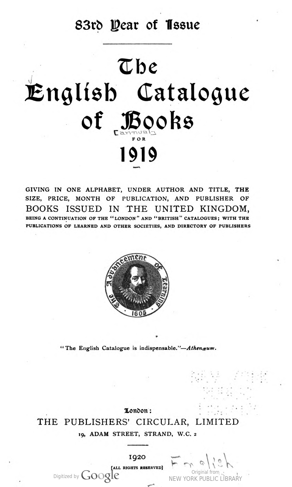
Data Table
| entry | last_name | first_name | title | publisher | price | format | original_entry | author_name | creators | is_editor | date | catalogue_year | is_net | |
|---|---|---|---|---|---|---|---|---|---|---|---|---|---|---|
| 0 | . A B C Motor, marine, and aircraft guide, 1920 OFFICE, Apr. '19 | NaN | NaN | A B C Motor, marine, and aircraft guide | OFFICE | NaN | NaN | . A B C Motor, marine, and aircraft guide, 1920 OFFICE, Apr. '19 | NaN | NaN | NaN | Apr. '19 | 1919 | NaN |
| 1 | A B C of common birds (An). 18mo. 4×34, pp. 64, swd. 6d. .R.S.P.B., July '19 | NaN | NaN | A B C of common birds (An) | R.S.P.B. | 6d. | 18mo. | A B C of common birds (An). 18mo. 4×34, pp. 64, swd. 6d. .R.S.P.B., July '19 | NaN | NaN | NaN | July '19 | 1919 | NaN |
| 2 | A B C of etiquette (The). Cr. 8vo. 4×31, pp. 28, swd. is. net ..HARNDEN, Oct. '19 | NaN | NaN | A B C of etiquette (The) | HARNDEN | NaN | 8vo. | A B C of etiquette (The). Cr. 8vo. 4×31, pp. 28, swd. is. net ..HARNDEN, Oct. '19 | NaN | NaN | NaN | Oct. '19 | 1919 | NaN |
| 3 | A. L. Nursery rhyme reader (The): a selection of 22 of the most popular nursery rhymes with Illus. for colouring. Cr. 8vo. 7×5, pp. 22, swd. 3d. net…(Leeds) E. J. ARNOLD, July '19 | NaN | NaN | A. L. Nursery rhyme reader (The): a selection of | E. J. ARNOLD | NaN | 8vo. | A. L. Nursery rhyme reader (The): a selection of 22 of the most popular nursery rhymes with Illus. for colouring. Cr. 8vo. 7×5, pp. 22, swd. 3d. net…(Leeds) E. J. ARNOLD, July '19 | NaN | NaN | NaN | July '19 | 1919 | NaN |
| 4 | A. L. Print-writing copy books (The), No. 3 4to. 8x64, pp. 24, swd. 3d. net (Leeds) E. J. ARNOLD, July '19 | NaN | NaN | A. L. Print-writing copy books (The) | E. J. ARNOLD | 3d. | 4to. | A. L. Print-writing copy books (The), No. 3 4to. 8x64, pp. 24, swd. 3d. net (Leeds) E. J. ARNOLD, July '19 | NaN | NaN | NaN | July '19 | 1919 | net |
| 5 | Abbot (Jane)-Keineth. Illus. by Harriet Roose- velt Richards. 5s. net..LIPPINCOTT, Mar. '19 | Abbot | Jane | Keineth | LIPPINCOTT | 5s. | NaN | Abbot (Jane)-Keineth. Illus. by Harriet Roose- velt Richards. 5s. net..LIPPINCOTT, Mar. '19 | Jane Abbot | ['Abbot (Jane)'] | NaN | Mar. '19 | 1919 | net |
| 6 | Abbott (Eleanor Hallowell)-Love and Mrs. Kendrur. Cr. 8vo. 7 X4, pp. 116, 2s. net HEINEMANN, Oct. '19 | Abbott | Eleanor Hallowell | Love and Mrs | HEINEMANN | 2s. | 8vo. | Abbott (Eleanor Hallowell)-Love and Mrs. Kendrur. Cr. 8vo. 7 X4, pp. 116, 2s. net HEINEMANN, Oct. '19 | Eleanor Hallowell Abbott | ['Abbott (Eleanor Hallowell)'] | NaN | Oct. '19 | 1919 | net |
| 7 | Abbott (Eleanor Hallowell)-The Ne'er-do-much. Cr. 8vo. 7×5, pp. 156, 5s. net HODDER, July '19 | Abbott | Eleanor Hallowell | The Ne'er-do-much | HODDER | 5s. | 8vo. | Abbott (Eleanor Hallowell)-The Ne'er-do-much. Cr. 8vo. 7×5, pp. 156, 5s. net HODDER, July '19 | Eleanor Hallowell Abbott | ['Abbott (Eleanor Hallowell)'] | NaN | July '19 | 1919 | net |
| 8 | Abbott (Wilbur C.)-Colonel John Scott of Long 1sland. 8vo. 5s. 6d. net (Yale Univ. Pr.) MILFORD, Oct. '19 | Abbott | Wilbur C. | Colonel John Scott of Long | MILFORD | 5s. 6d. | 8vo. | Abbott (Wilbur C.)-Colonel John Scott of Long Island. 8vo. 5s. 6d. net (Yale Univ. Pr.) MILFORD, Oct. '19 | Wilbur C. Abbott | ['Abbott (Wilbur C.)'] | NaN | Oct. '19 | 1919 | net |
| 9 | Abbott (Wilbur Cortez)-The Expansion of Europe: a history of the foundations of the modern world. 2 vols. 8vo. 9 × 54, pp. 476, 30s. net BELL, Sep.'19 | Abbott | Wilbur Cortez | The Expansion of Europe: a history of the foundations of the modern world | BELL | 30s. | 8vo. | Abbott (Wilbur Cortez)-The Expansion of Europe: a history of the foundations of the modern world. 2 vols. 8vo. 9 × 54, pp. 476, 30s. net BELL, Sep.'19 | Wilbur Cortez Abbott | ['Abbott (Wilbur Cortez)'] | NaN | Sep.'19 | 1919 | net |
| 10 | Abdullah (Achmed)-The Honourable Gentlemen and others. Cr. 8vo. 7× 5, pp. 262, 6s. net PUTNAM, Dec. '19 | Abdullah | Achmed | The Honourable Gentlemen and others | PUTNAM | 6s. | 8vo. | Abdullah (Achmed)-The Honourable Gentlemen and others. Cr. 8vo. 7× 5, pp. 262, 6s. net PUTNAM, Dec. '19 | Achmed Abdullah | ['Abdullah (Achmed)'] | NaN | Dec. '19 | 1919 | net |
| 11 | About (Edmond)—The Twins. Trans. by C. W. Bell. 16mo. 6×4, pp. 126, swd. 1s. 6d. net (Harrap's Bilingual ser: French) HARRAP, Dec. '19 | About | Edmond | The Twins | HARRAP | 1s. 6d. | 16mo. | About (Edmond)—The Twins. Trans. by C. W. Bell. 16mo. 6×4, pp. 126, swd. Is. 6d. net (Harrap's Bilingual ser: French) HARRAP, Dec. '19 | Edmond About | ['About (Edmond)'] | NaN | Dec. '19 | 1919 | net |
| 12 | Abraham (George D.)-On Alpine heights and British crags. Ryl. 8vo. 9×5, pp.317, IOS. 6d. net .METHUEN, Sep. '19 | Abraham | George D. | On Alpine heights and British crags | METHUEN | 6d. | 8vo. | Abraham (George D.)-On Alpine heights and British crags. Ryl. 8vo. 9×5, pp.317, IOS. 6d. net .METHUEN, Sep. '19 | George D. Abraham | ['Abraham (George D.)'] | NaN | Sep. '19 | 1919 | net |
| 13 | Abraham (Herbert)-Asphalts and allied sub- stances the occurrence, modes of production, uses in the arts, and methods of testing. Illus. Roy. 8vo. 94×6, pp. 631, 25s. net LOCKWOOD, May, '19 | Abraham | Herbert | Asphalts and allied sub- stances the occurrence, modes of production, uses in the arts, and methods of testing | LOCKWOOD | 25s. | 8vo. | Abraham (Herbert)-Asphalts and allied sub- stances the occurrence, modes of production, uses in the arts, and methods of testing. Illus. Roy. 8vo. 94×6, pp. 631, 25s. net LOCKWOOD, May, '19 | Herbert Abraham | ['Abraham (Herbert)'] | NaN | May, '19 | 1919 | net |
| 14 | Abraham Jacob, Joshua: stories that never grow old, for the children. Ryl. 8vo. 91×71, pp. 62, 2s. 6d. net…. MORGAN & S., Nov. '19 | NaN | NaN | Abraham Jacob, Joshua: stories that never grow old, for the children | MORGAN & S. | 2s. 6d. | 8vo. | Abraham Jacob, Joshua: stories that never grow old, for the children. Ryl. 8vo. 91×71, pp. 62, 2s. 6d. net…. MORGAN & S., Nov. '19 | NaN | NaN | NaN | Nov. '19 | 1919 | net |
1920
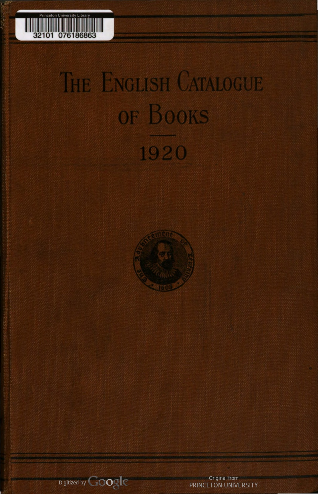
Data Table
| entry | last_name | first_name | title | publisher | price | format | original_entry | author_name | creators | is_editor | date | catalogue_year | is_net | |
|---|---|---|---|---|---|---|---|---|---|---|---|---|---|---|
| 0 | A was an archer. Illus. by D. Pailthorpe. 4to. swd. 2s. net .HARRAP, Mar. '20 | NaN | NaN | A was an archer | HARRAP | 2s. | 4to. | A was an archer. Illus. by D. Pailthorpe. 4to. swd. 2s. net .HARRAP, Mar. '20 | NaN | NaN | NaN | Mar. '20 | 1920 | net |
| 1 | A B C universal commercial telegraphic code. Proprietors, E. M. M. Clauson-Thue and F. C. E. Faulkner. 6th ed. Ed. by William Droege. Ryl. 8vo. 94 x 61, pp. 1,542, 40s. net EDEN FISHER, Mar. '20 | NaN | NaN | A B C universal commercial telegraphic code | EDEN FISHER | 40s. | 8vo. | A B C universal commercial telegraphic code. Proprietors, E. M. M. Clauson-Thue and F. C. E. Faulkner. 6th ed. Ed. by William Droege. Ryl. 8vo. 94 x 61, pp. 1,542, 40s. net EDEN FISHER, Mar. '20 | NaN | NaN | NaN | Mar. '20 | 1920 | net |
| 2 | Aaland 1slands, Question of the : Reference to the League of Nations. 2d. net H.M.S.O., Aug. '20 | NaN | NaN | Aaland | H.M.S.O. | 2d. | NaN | Aaland Islands, Question of the : Reference to the League of Nations. 2d. net H.M.S.O., Aug. '20 | NaN | NaN | NaN | Aug. '20 | 1920 | net |
| 3 | Abbay (R., Rev. Our orchards : letters to the East Anglian Daily Times, 1892-1920. With notes. 8vo. 81 x 54, pp. 35, swd. 1s. net HARRISON, June'20 | NaN | NaN | Abbay (R., Rev | HARRISON | 1s. | 8vo. | Abbay (R., Rev. Our orchards : letters to the East Anglian Daily Times, 1892-1920. With notes. 8vo. 81 x 54, pp. 35, swd. Is. net HARRISON, June'20 | NaN | NaN | NaN | June'20 | 1920 | net |
| 4 | Abbott (Anstice) A Girl widow's romance : a tale of Indian life. Forew. by Rev. C. Askwith. Cr. 8vo. 71 X 5, pp. 125, 2s. 6d. net R.T.S., Oct. '20 | Abbott | Anstice | A Girl widow's romance : a tale of Indian life | R.T.S. | 2s. 6d. | 8vo. | Abbott (Anstice) A Girl widow's romance : a tale of Indian life. Forew. by Rev. C. Askwith. Cr. 8vo. 71 X 5, pp. 125, 25. 6d. net R.T.S., Oct. '20 | Anstice Abbott | ['Abbott (Anstice)'] | NaN | Oct. '20 | 1920 | net |
| 5 | Abbott (Claude C.) trans.—Nine songs from the 12th century French. 10 X 6, pp. 16, 2s. CHELSEA BOOK CLUB, Aug.'20 | Abbott | Claude C. | Nine songs from the | CHELSEA BOOK CLUB | 2s. | NaN | Abbott (Claude C.) trans.—Nine songs from the 12th century French. 10 X 6, pp. 16, 25. CHELSEA BOOK CLUB, Aug.'20 | Claude C. Abbott | ['Abbott (Claude C.)'] | NaN | Aug.'20 | 1920 | NaN |
| 6 | Abbott (E. C.) English composition : based on observation and general reading. Cr. 8vo. 71 x 44, pp. 228, 4s. 6d. net BELL, Aug. '20 | Abbott | E. C. | English composition : based on observation and general reading | BELL | 4s. 6d. | 8vo. | Abbott (E. C.) English composition : based on observation and general reading. Cr. 8vo. 71 x 44, pp. 228, 4s. 6d. net BELL, Aug. '20 | E. C. Abbott | ['Abbott (E. C.)'] | NaN | Aug. '20 | 1920 | net |
| 7 | Abbot (E. C.)Scientific history of the world. In 3 parts. Part 1, to 148s. Cr. 8vo. 7.X 44, pp. 415, 4s. 6d. net ..BELL, June'20 | Abbot | E. C. | Scientific history of the world | BELL | 4s. 6d. | 8vo. | Abbot (E. C.)Scientific history of the world. In 3 parts. Part 1, to 1485. Cr. 8vo. 7.X 44, pp. 415, 4s. 6d. net ..BELL, June'20 | E. C. Abbot | ['Abbot (E. C.)'] | NaN | June'20 | 1920 | net |
| 8 | Abbott (Jane D.)-Happy house. Cr. 8vo. 78. net LIPPINCOTT, Sep. 20 | Abbott | Jane D. | Happy house | LIPPINCOTT | NaN | 8vo. | Abbott (Jane D.)-Happy house. Cr. 8vo. 78. net LIPPINCOTT, Sep. 20 | Jane D. Abbott | ['Abbott (Jane D.)'] | NaN | Sep. 20 | 1920 | NaN |
| 9 | Abbott (Jane D.)-Larkspur. Illus. by Harriet R. Richards. Cr. 8vo. 7*5, pp. 261, 6s. net LIPPINCOTT, June'20 | Abbott | Jane D. | Larkspur | LIPPINCOTT | 6s. | 8vo. | Abbott (Jane D.)-Larkspur. Illus. by Harriet R. Richards. Cr. 8vo. 7*5, pp. 261, 6s. net LIPPINCOTT, June'20 | Jane D. Abbott | ['Abbott (Jane D.)'] | NaN | June'20 | 1920 | net |
| 10 | Abbott (Norman)-Let nothing you dismay, and other verses. 18mo. 2s, 6d. net JARROLDS, Sep. '20 | Abbott | Norman | Let nothing you dismay, and other verses | JARROLDS | 2s. 6d. | 18mo. | Abbott (Norman)-Let nothing you dismay, and other verses. 18mo. 2s, 6d. net JARROLDS, Sep. '20 | Norman Abbott | ['Abbott (Norman)'] | NaN | Sep. '20 | 1920 | net |
| 11 | Abdul Majid-Malay self-taught by the Natural method, with phonetic pronunciation. Cr. 8vo. 7 X 4, pp. 120, 4s. net, swd. 33. net. (Marl- borough's Self-taught ser.) MARLBOROUGH, July'20 | NaN | NaN | Abdul Majid-Malay self-taught by the Natural method, with phonetic pronunciation | MARLBOROUGH | NaN | 8vo. | Abdul Majid-Malay self-taught by the Natural method, with phonetic pronunciation. Cr. 8vo. 7 X 4, pp. 120, 4s. net, swd. 33. net. (Marl- borough's Self-taught ser.) MARLBOROUGH, July'20 | NaN | NaN | NaN | July'20 | 1920 | NaN |
| 12 | Abott (G. F.)-A Record of Sir John Finch's Embassy, 1674-1681 : under the Turk in Constantinople. With a foreword by Viscount Bryce, O.M. Ryl. 8vo. 97 x6, pp. 433, 18s. net ..MACMILLAN, Oct. '20 | Abott | G. F. | A Record of Sir John Finch's Embassy | MACMILLAN | 18s. | 8vo. | Abott (G. F.)-A Record of Sir John Finch's Embassy, 1674-1681 : under the Turk in Constantinople. With a foreword by Viscount Bryce, O.M. Ryl. 8vo. 97 x6, pp. 433, 18s. net ..MACMILLAN, Oct. '20 | G. F. Abott | ['Abott (G. F.)'] | NaN | Oct. '20 | 1920 | net |
| 13 | Abrahamian (Abel, Rt. Rev. Dr.)-The Church and faith of Armenia. Pref. by The Lord Bishop of Gloucester. Cr. 8vo. 71 x 5 swd., pp. 75, 1s. 6d….. ..FAITH PR., June 20 | Abrahamian | Abel, Rt. Rev. Dr. | The Church and faith of Armenia | FAITH PR. | 1s. 6d. | 8vo. | Abrahamian (Abel, Rt. Rev. Dr.)-The Church and faith of Armenia. Pref. by The Lord Bishop of Gloucester. Cr. 8vo. 71 x 5 swd., pp. 75, Is. 6d….. ..FAITH PR., June 20 | Abel, Rt. Rev. Dr. Abrahamian | ['Abrahamian (Abel, Rt. Rev. Dr.)'] | NaN | June 20 | 1920 | NaN |
| 14 | Abrahams (1srael) —Poetry and religion. With foreword by Sir Arthur Quiller-Couch. 18mo. 64 X4, pp. 81, 2s, 6d net; swd. is, net ALLEN & U., Oct. '20 | Abrahams | 1srael | Poetry and religion | ALLEN & U. | NaN | 18mo. | Abrahams (Israel) —Poetry and religion. With foreword by Sir Arthur Quiller-Couch. 18mo. 64 X4, pp. 81, 2s, 6d net; swd. is, net ALLEN & U., Oct. '20 | 1srael Abrahams | ['Abrahams (1srael)'] | NaN | Oct. '20 | 1920 | NaN |
1921
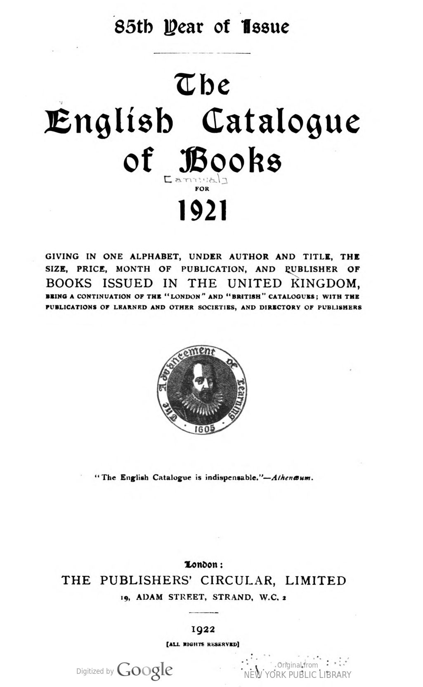
Data Table
| entry | last_name | first_name | title | publisher | price | format | original_entry | author_name | creators | is_editor | date | catalogue_year | is_net | |
|---|---|---|---|---|---|---|---|---|---|---|---|---|---|---|
| 0 | A B C auction sales record: with full descriptions and prices for the year 1920 of old English silver. Compiled by Alfred J. Abbey. Cr. 8vo. 7×5, pp. 128, 5s. net. .S. PAUL, July '21 | NaN | NaN | A B C auction sales record: with full descriptions and prices for the year | S. PAUL | 5s. | 8vo. | A B C auction sales record: with full descriptions and prices for the year 1920 of old English silver. Compiled by Alfred J. Abbey. Cr. 8vo. 7×5, pp. 128, 5s. net. .S. PAUL, July '21 | NaN | NaN | NaN | July '21 | 1921 | net |
| 1 | A B C guide to the practice of the Supreme Court. 1922. By F. R. P. Stringer. 17th ed. Cr. 8vo. pp. 219, 8s. 6d. net SWEET & M., Nov. '21 | NaN | NaN | A B C guide to the practice of the Supreme Court | SWEET & M. | 8s. 6d. | 8vo. | A B C guide to the practice of the Supreme Court. 1922. By F. R. P. Stringer. 17th ed. Cr. 8vo. pp. 219, 8s. 6d. net SWEET & M., Nov. '21 | NaN | NaN | NaN | Nov. '21 | 1921 | net |
| 2 | A.B.C. motor, marine and aircraft guide, 1921 (The): including a topographical transport directory to 4,670 places in the United King- dom. Compiled by W. C. Bersey and A. Dorey. 4to. 8×7, pp. 526, 7s. 6d. net TECHNICAL PUBG. CO., Aug. '21 | NaN | NaN | A.B.C. motor, marine and aircraft guide | TECHNICAL PUBG. CO. | 7s. 6d. | 4to. | A.B.C. motor, marine and aircraft guide, 1921 (The): including a topographical transport directory to 4,670 places in the United King- dom. Compiled by W. C. Bersey and A. Dorey. 4to. 8×7, pp. 526, 7s. 6d. net TECHNICAL PUBG. CO., Aug. '21 | NaN | NaN | NaN | Aug. '21 | 1921 | net |
| 3 | A.L. Challenge test cards (The). Grade 2. Containing: (a) Mechanical sums; (b) Three sets of tests; (c) Syllabus card; (d) Two sets of answers. Cr. 8vo. 6× 5, ppr. packet, 3s.net.. .E. J. ARNOLD, Feb. '21 | NaN | NaN | A.L. Challenge test cards (The) | E. J. ARNOLD | 3s. | 8vo. | A.L. Challenge test cards (The). Grade 2. Containing: (a) Mechanical sums; (b) Three sets of tests; (c) Syllabus card; (d) Two sets of answers. Cr. 8vo. 6× 5, ppr. packet, 3s.net.. .E. J. ARNOLD, Feb. '21 | NaN | NaN | NaN | Feb. '21 | 1921 | net |
| 4 | A. L. Challenge test cards (The). Grade 3. Containing: (a) Mechanical sums; (b) Three sets of tests; (c) Syllabus card; (d) Two sets of answers. Cr. 8vo. 6x 5, cards swd. 3s. net E. J. ARNOLD, Mar. '21 | NaN | NaN | A. L. Challenge test cards (The) | E. J. ARNOLD | 3s. | 8vo. | A. L. Challenge test cards (The). Grade 3. Containing: (a) Mechanical sums; (b) Three sets of tests; (c) Syllabus card; (d) Two sets of answers. Cr. 8vo. 6x 5, cards swd. 3s. net E. J. ARNOLD, Mar. '21 | NaN | NaN | NaN | Mar. '21 | 1921 | net |
| 5 | A. L. Challenge test cards (The). Grade 5. Cr. 8vo. 61× 5, swd. 3s. net packet E. J. ARNOLD, May '21 | NaN | NaN | A. L. Challenge test cards (The) | E. J. ARNOLD | NaN | 8vo. | A. L. Challenge test cards (The). Grade 5. Cr. 8vo. 61× 5, swd. 3s. net packet E. J. ARNOLD, May '21 | NaN | NaN | NaN | May '21 | 1921 | NaN |
| 6 | A. L. Challenge test cards (The). Grade 7. Cr. 8vo. 61×4, per swd. packet 3s. net E. J. ARNOLD, Oct. '21 | NaN | NaN | A. L. Challenge test cards (The) | E. J. ARNOLD | 3s. | 8vo. | A. L. Challenge test cards (The). Grade 7. Cr. 8vo. 61×4, per swd. packet 3s. net E. J. ARNOLD, Oct. '21 | NaN | NaN | NaN | Oct. '21 | 1921 | net |
| 7 | A.L. County cookery book (The). Compiled by a County Education Secretary and Domestic Subjects Staff. Cr. 8vo. 7×51, pp. 111, swd. 1s. 3d. net… . . . . . . . . . ….E. J. ARNOLD, Mar. '21 | NaN | NaN | A.L. County cookery book (The) | E. J. ARNOLD | 1s. 3d. | 8vo. | A.L. County cookery book (The). Compiled by a County Education Secretary and Domestic Subjects Staff. Cr. 8vo. 7×51, pp. 111, swd. Is. 3d. net… . . . . . . . . . ….E. J. ARNOLD, Mar. '21 | NaN | NaN | NaN | Mar. '21 | 1921 | net |
| 8 | A. L. Geography work-book of the British 1sles. Roy. 8vo. 91×71, pp. 24, swd. 1s. net ('A L'Geographical ser.)….E. J. ARNOLD, May 21 | NaN | NaN | A. L. Geography work-book of the British | E. J. ARNOLD | 1s. | 8vo. | A. L. Geography work-book of the British Isles. Roy. 8vo. 91×71, pp. 24, swd. Is. net ('A L'Geographical ser.)….E. J. ARNOLD, May 21 | NaN | NaN | NaN | May 21 | 1921 | net |
| 9 | A.L. Nature note book and garden diary (The). 8vo. 8×61, pp. 70, swd. 1s. 9d. net E. J. ARNOLD, Feb. '21 | NaN | NaN | A.L. Nature note book and garden diary (The) | E. J. ARNOLD | 1s. 9d. | 8vo. | A.L. Nature note book and garden diary (The). 8vo. 8×61, pp. 70, swd. Is. 9d. net E. J. ARNOLD, Feb. '21 | NaN | NaN | NaN | Feb. '21 | 1921 | net |
| 10 | A.L.O.E.-The Lost jewel. Illus. by H. E. Butler. Cr. 8vo. 7×41, pp. 200, 1s. 6d. net COLLINS, Sep. '21 | NaN | NaN | A.L.O.E.-The Lost jewel | COLLINS | 1s. 6d. | 8vo. | A.L.O.E.-The Lost jewel. Illus. by H. E. Butler. Cr. 8vo. 7×41, pp. 200, Is. 6d. net COLLINS, Sep. '21 | NaN | NaN | NaN | Sep. '21 | 1921 | net |
| 11 | Aaron (Charles D.)-Diseases of the digestive organs. 3rd ed., rev. Ryl. 8vo. pp. 904, 50s. net LEWIS, Nov. '21 | Aaron | Charles D. | Diseases of the digestive organs | LEWIS | 50s. | 8vo. | Aaron (Charles D.)-Diseases of the digestive organs. 3rd ed., rev. Ryl. 8vo. pp. 904, 50s. net LEWIS, Nov. '21 | Charles D. Aaron | ['Aaron (Charles D.)'] | NaN | Nov. '21 | 1921 | net |
| 12 | Abbott (Claude Colleer)-Poems. Cr. 8vo. 7 × 58. pp. 69, 5s. net…….. .BLACKWELL, Sep. '21 | Abbott | Claude Colleer | Poems | BLACKWELL | NaN | 8vo. | Abbott (Claude Colleer)-Poems. Cr. 8vo. 7 × 58. pp. 69, 5s. net…….. .BLACKWELL, Sep. '21 | Claude Colleer Abbott | ['Abbott (Claude Colleer)'] | NaN | Sep. '21 | 1921 | NaN |
| 13 | Abbott (Jane)-Aprilly. Cr. 8vo. pp. 287, 7s. 6d. net LIPPINCOTT, Dec. '21 | Abbott | Jane | Aprilly | LIPPINCOTT | 7s. 6d. | 8vo. | Abbott (Jane)-Aprilly. Cr. 8vo. pp. 287, 7s. 6d. net LIPPINCOTT, Dec. '21 | Jane Abbott | ['Abbott (Jane)'] | NaN | Dec. '21 | 1921 | net |
| 14 | Abbott (Lyman)-What Christianity means to me. Cr. 8vo. pp. 194, 9s. net MACMILLAN, July '21 | Abbott | Lyman | What Christianity means to me | MACMILLAN | 9s. | 8vo. | Abbott (Lyman)-What Christianity means to me. Cr. 8vo. pp. 194, 9s. net MACMILLAN, July '21 | Lyman Abbott | ['Abbott (Lyman)'] | NaN | July '21 | 1921 | net |
1922
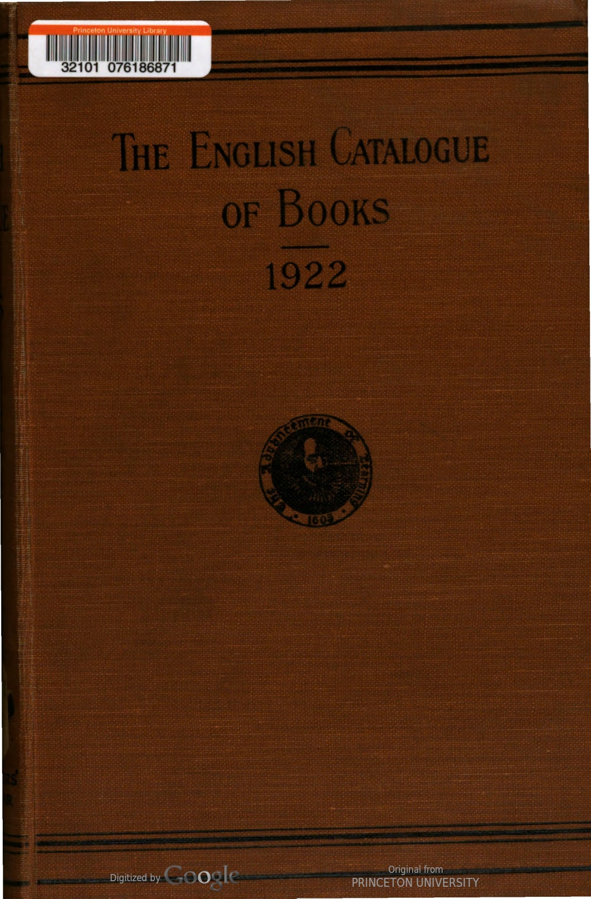
Data Table
| entry | last_name | first_name | title | publisher | price | format | original_entry | author_name | creators | is_editor | date | catalogue_year | is_net | |
|---|---|---|---|---|---|---|---|---|---|---|---|---|---|---|
| 0 | A B C guide to the practice of the Supreme Court, 1923. By F. R. S. Stringer. 18th ed. 71 x 5, pp. 239, 8s. 6d. net. SWEET & M., Oct. '22 | NaN | NaN | A B C guide to the practice of the Supreme Court | SWEET & M. | 8s. 6d. | NaN | A B C guide to the practice of the Supreme Court, 1923. By F. R. S. Stringer. 18th ed. 71 x 5, pp. 239, 8s. 6d. net. SWEET & M., Oct. '22 | NaN | NaN | NaN | Oct. '22 | 1922 | net |
| 1 | A B C or alphabetical railway guide. (Monthly.) ea. swd. 28. net. (15, Fetter Lane, E.C.) OFFICE, Jan., etc., '22 | NaN | NaN | A B C or alphabetical railway guide | OFFICE | NaN | NaN | A B C or alphabetical railway guide. (Monthly.) ea. swd. 28. net. (15, Fetter Lane, E.C.) OFFICE, Jan., etc., '22 | NaN | NaN | NaN | Jan., etc., '22 | 1922 | NaN |
| 2 | A. E. See E. (A.) Aaland 1slands : Convention respecting non- fortification and neutralisation, Geneva, Oct., 1921. 6d. net…….. …H.M.S.O., June '22 | NaN | NaN | A. E. See E. (A.) Aaland | H.M.S.O. | 6d. | NaN | A. E. See E. (A.) Aaland Islands : Convention respecting non- fortification and neutralisation, Geneva, Oct., 1921. 6d. net…….. …H.M.S.O., June '22 | NaN | NaN | NaN | June '22 | 1922 | net |
| 3 | Abbott (G. F.)—Greece and the Allies, 1914–1922. Cr. 8vo, 74 x 5, pp. 253, 78. 6d. net. METHUEN, Dec. '22 | Abbott | G. F. | Greece and the Allies | METHUEN | 6d. | 8vo, | Abbott (G. F.)—Greece and the Allies, 1914–1922. Cr. 8vo, 74 x 5, pp. 253, 78. 6d. net. METHUEN, Dec. '22 | G. F. Abbott | ['Abbott (G. F.)'] | NaN | Dec. '22 | 1922 | net |
| 4 | Abbott_(Jane)-Red-Robin. Illus. by Harriet R. Richards. 2nd imp. Cr. 8vo, 78 x 5, pp. 327, 7s. 6d. net……LIPPINCOTT, Dec. '22 | NaN | NaN | Abbott_(Jane)-Red-Robin | LIPPINCOTT | 7s. 6d. | 8vo, | Abbott_(Jane)-Red-Robin. Illus. by Harriet R. Richards. 2nd imp. Cr. 8vo, 78 x 5, pp. 327, 75. 6d. net……LIPPINCOTT, Dec. '22 | NaN | NaN | NaN | Dec. '22 | 1922 | net |
| 5 | Abbott (Lyman)-Silhouettes of my contempor- aries. 8vo. 81 x 51, pp. 361, 12s. 6d. net ALLEN & U., May '22 | Abbott | Lyman | Silhouettes of my contempor- aries | ALLEN & U. | 12s. 6d. | 8vo. | Abbott (Lyman)-Silhouettes of my contempor- aries. 8vo. 81 x 51, pp. 361, I2s. 6d. net ALLEN & U., May '22 | Lyman Abbott | ['Abbott (Lyman)'] | NaN | May '22 | 1922 | net |
| 6 | Abbott (T. K.) and Gwynn (E. W.)–Catalogue of the Irish manuscripts in the library of Trinity College, Dublin. 81x6, pp. 465, 21s. net (Hodges, Figgis) LONGMANS, Apr. '22 | Abbott | T. K. | Catalogue of the Irish manuscripts in the library of Trinity College, Dublin | LONGMANS | 21s. | NaN | Abbott (T. K.) and Gwynn (E. W.)–Catalogue of the Irish manuscripts in the library of Trinity College, Dublin. 81x6, pp. 465, 215. net (Hodges, Figgis) LONGMANS, Apr. '22 | T. K. Abbott | ['Abbott (T. K.)', 'Gwynn (E. W.)'] | NaN | Apr. '22 | 1922 | net |
| 7 | Abbott-Smith (G.) A Manual Greek lexicon of the New Testament. 9 X 6, pp. 528. 218. net T. & T. CLARK, Mar.'22 | Abbott-Smith | G. | A Manual Greek lexicon of the New Testament | T. & T. CLARK | NaN | NaN | Abbott-Smith (G.) A Manual Greek lexicon of the New Testament. 9 X 6, pp. 528. 218. net T. & T. CLARK, Mar.'22 | G. Abbott-Smith | ['Abbott-Smith (G.)'] | NaN | Mar.'22 | 1922 | NaN |
| 8 | Abdullah (Achmed)—Night drums. Cr. 8vo. 74 x 5, pp. 287, 78. 6d net .. HUTCHINSON, May'22 | Abdullah | Achmed | Night drums | HUTCHINSON | 6d | 8vo. | Abdullah (Achmed)—Night drums. Cr. 8vo. 74 x 5, pp. 287, 78. 6d net .. HUTCHINSON, May'22 | Achmed Abdullah | ['Abdullah (Achmed)'] | NaN | May'22 | 1922 | net |
| 9 | Abercrombie (Lascelles)-An Essay towards a theory of art. Cr. 8vo. 7 x 5, pp. 115, 58. net M. SECKER, June '22 | Abercrombie | Lascelles | An Essay towards a theory of art | M. SECKER | NaN | 8vo. | Abercrombie (Lascelles)-An Essay towards a theory of art. Cr. 8vo. 7 x 5, pp. 115, 58. net M. SECKER, June '22 | Lascelles Abercrombie | ['Abercrombie (Lascelles)'] | NaN | June '22 | 1922 | NaN |
| 10 | Abercrombie (Lascelles)—Four short plays. Cr. 8vo. 7* X 51, PP, 176. 6s. net. M. SECKER, July '22 | Abercrombie | Lascelles | Four short plays | M. SECKER | 6s. | 8vo. | Abercrombie (Lascelles)—Four short plays. Cr. 8vo. 7* X 51, PP, 176. 6s. net. M. SECKER, July '22 | Lascelles Abercrombie | ['Abercrombie (Lascelles)'] | NaN | July '22 | 1922 | net |
| 11 | Abercrombie (Patrick) and Johnson (T. H.)—The Doncaster regional planning scheme : the report prepared for the Joint Committee. 4to, pp. 93, swd. ros, net…. HODDER & S., Dec. '22 | Abercrombie | Patrick | The Doncaster regional planning scheme : the report prepared for the Joint Committee | HODDER & S. | NaN | 4to, | Abercrombie (Patrick) and Johnson (T. H.)—The Doncaster regional planning scheme : the report prepared for the Joint Committee. 4to, pp. 93, swd. ros, net…. HODDER & S., Dec. '22 | Patrick Abercrombie | ['Abercrombie (Patrick)', 'Johnson (T. H.)'] | NaN | Dec. '22 | 1922 | NaN |
| 12 | Abhinava Gupta-Malinivijaya Varttikam. Ed. in Sanskrit with notes by Madhusudan Kaul. 8vo., pp. 138, 6s. 6d., 78. 6d. (Kashmir ser. of texts and studies) LUZAC; PROBSTHAIN, Mar. '22 | NaN | NaN | Abhinava Gupta-Malinivijaya Varttikam | PROBSTHAIN | NaN | 8vo. | Abhinava Gupta-Malinivijaya Varttikam. Ed. in Sanskrit with notes by Madhusudan Kaul. 8vo., pp. 138, 6s. 6d., 78. 6d. (Kashmir ser. of texts and studies) LUZAC; PROBSTHAIN, Mar. '22 | NaN | NaN | NaN | Mar. '22 | 1922 | NaN |
| 13 | Abhinava Gupta-The Tantraloka. With com- mentary by Rajanaka Jayaratha. Ed. in Sanskrit with notes by Madhusudan Kaul. Vols. 2-3. 8vo. Vol. 2, 6s. 6d., 78. 6d. ; Vol. 3, ros. 6d., 12s. (Kashmir ser. of texts and studies) LUZAC; PROBSTHAIN, Mar.'22 | NaN | NaN | Abhinava Gupta-The Tantraloka | PROBSTHAIN | NaN | 8vo. | Abhinava Gupta-The Tantraloka. With com- mentary by Rajanaka Jayaratha. Ed. in Sanskrit with notes by Madhusudan Kaul. Vols. 2-3. 8vo. Vol. 2, 6s. 6d., 78. 6d. ; Vol. 3, ros. 6d., 125. (Kashmir ser. of texts and studies) LUZAC; PROBSTHAIN, Mar.'22 | NaN | NaN | NaN | Mar.'22 | 1922 | NaN |
| 14 | Abraham (George D.)–Swiss mountain climbs. Cheaper ed. Cr. 8vo. 7X 44, pp. 447, 7s. 6d. net. Mills & B., July '22 | Abraham | George D. | Swiss mountain climbs | B. | NaN | 8vo. | Abraham (George D.)–Swiss mountain climbs. Cheaper ed. Cr. 8vo. 7X 44, pp. 447, 75. 6d. net. Mills & B., July '22 | George D. Abraham | ['Abraham (George D.)'] | NaN | July '22 | 1922 | NaN |
Entries Captured by Our Dataframes
This visualization shows how many catalogue entries we captured in our data relative to how many total entries were listed in each issue.
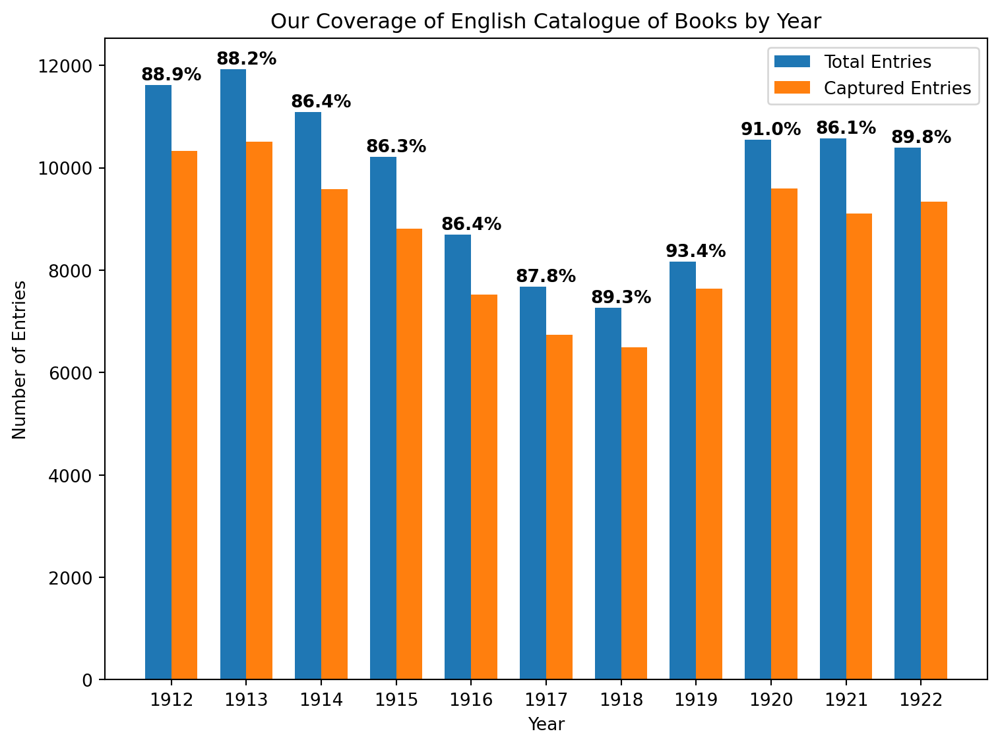
EMBEDDED OBSERVABLE TABLE
Embedded Observable Table
’’’ {ojs} data = FileAttachment(“ALL DATA.csv”).csv
’’’